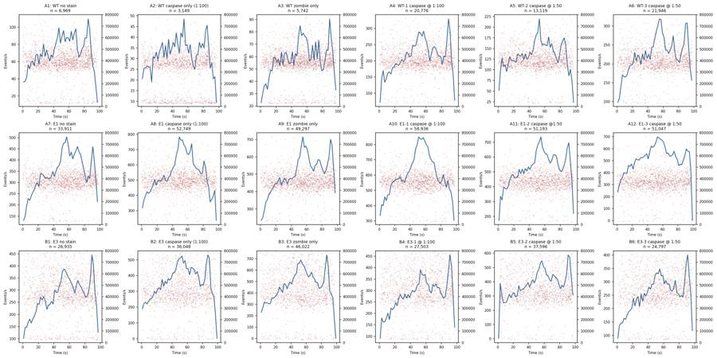
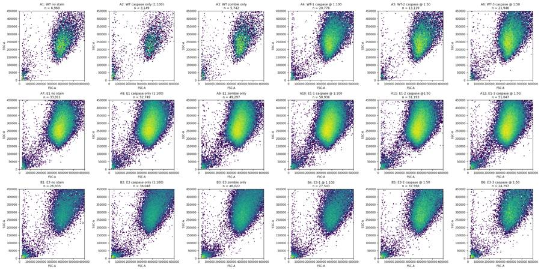
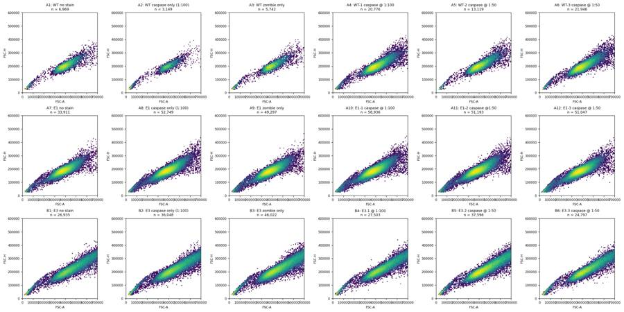
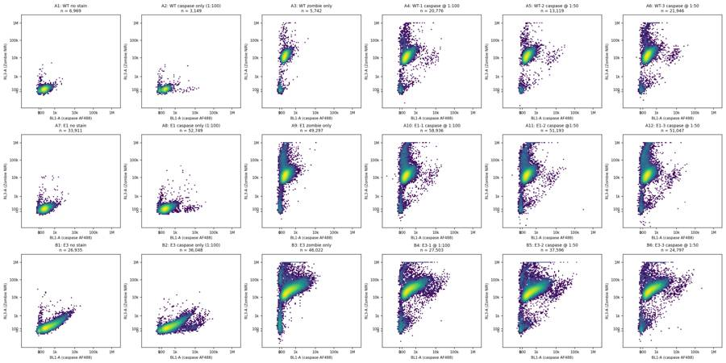
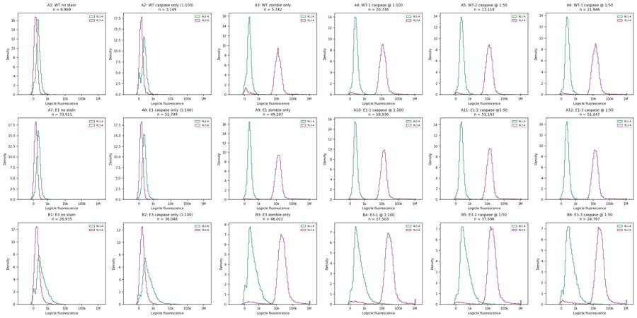
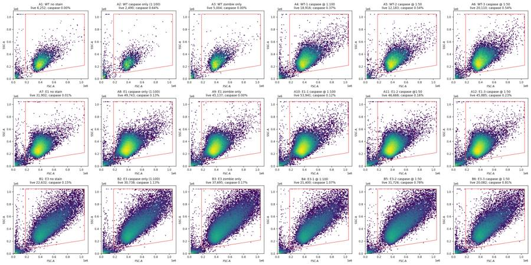
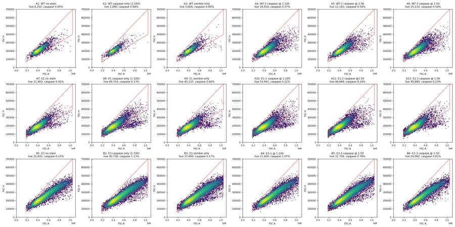
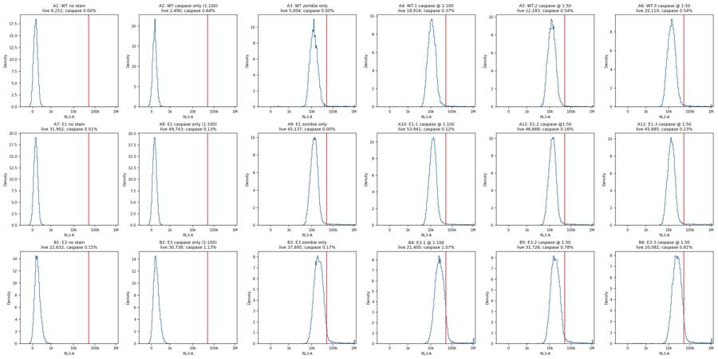
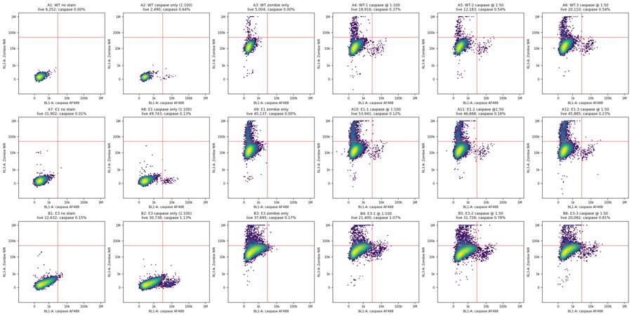
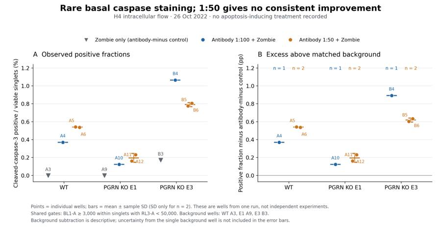

B2_flowkit · GPT-6 Astra · attempt XpTgVUM
Batch fk1 · job fk1_B_EXP22004082_26_Oct_2022_flowkit_gpt-6-astra · trial B_EXP22004082_26_Oct_2022_flowki__XpTgVUM. Long tool outputs are cut at 6,000 characters.
Score
0.65
0.65
Minutes
9.4
9.4
Agent cost
$3.54
$3.54
Steps
21
21
Screenshots / images
11
11
1
task prompt (instruction.md)
<environment_context> <cwd>/task</cwd> <shell>bash</shell> <current_date>2026-11-10</current_date> <timezone>Etc/UTC</timezone> <filesystem><workspace_roots><root>/task</root></workspace_roots><permission_profile type="disabled"><file_system type="unrestricted" /></permission_profile></filesystem> </environment_context>
2
user message
# Analyse the 26-Oct-2022 H4 caspase ICFC plate, answer the plan's question, recommend the next step
You are the analyst for this experiment: analyse the plate, answer the plan's question, and recommend the next step.
## Inputs (read-only)
| Path | Content |
|---|---|
| `/task/inputs/plan.md` | Notebook text up to this run: background, objective, materials, protocol, cytometer settings, plate maps |
| `/task/inputs/plate_layout.csv` | One row per FCS file: `file, well, sample, cell_line` (sample = plate-map label as written in the notebook) |
| `/task/inputs/raw/` | 18 FCS files (Attune NxT, FCS 3.1), unchanged |
## Environment
- **All gating is done with FlowKit**, including all population counts.
- Graders re-apply the gates in your saved gates to the raw files and check that they reproduce your counts.
- **Channel names.** The channel names stored in the FCS files are labels stored inside the FCS files, and they may be out of date. Work out which detector carries which reagent from the reagents and cytometer settings in `plan.md`.
- **Time budget:** 4 hours.
## Deliverables (all in `/task/outputs/`)
| Path | Content |
|---|---|
| `gates.xml` | Your gating strategy as GatingML 2.0, written with `flowkit.export_gatingml` (see *Software*). It must load with `flowkit.parse_gating_xml`. One gate per reported population, named exactly as the population. |
| `counts.csv` | Per file × population counts |
| `flags.csv` | Per-file QC decision |
| `condition_summary.csv` | Per-condition summary of the metric you use to answer the question |
| `figure.png` | Main result chart |
| `report.md` | Written analysis |
| `answer.json` | Structured answer and decision |
### `gates.xml`
- Your gating strategy as GatingML 2.0, written with `flowkit.export_gatingml` (see *Software*). It must load with `flowkit.parse_gating_xml("/task/outputs/gates.xml")`.
- Every population in `counts.csv` except `all_events` must be a gate in this file whose name is identical to the population name.
### `counts.csv`
- **Columns, in this order:** `file,well,population,role,parent,count,pct_of_parent`
- **One row per FCS file × population.** Cover all 18 files, with the same set of populations for every file.
- `file`: the exact FCS file name. `well`: the well from `plate_layout.csv`.
- **The `all_events` row.** Each file has one row with population `all_events`, role `other`, parent `none`, and an empty `pct_of_parent`.
- **`role`** is one of `cells`, `singlets`, `live`, `marker_positive`, `other`.
- Each of `cells`, `singlets`, `live` and `marker_positive` must be used by exactly one population, and that population must be the same in every file.
- Any additional populations use `other`.
- `parent`: the name of the parent population (`all_events` for the first gate).
- `count`: an integer event count from the full data.
- `pct_of_parent`: 100 × count / parent count. Leave it empty when the parent count is 0.
### `flags.csv`
- **Columns, in this order:** `file,well,issue_type,evidence,decision`
- One row per FCS file, covering all 18 files.
- `issue_type` is one of `none`, `clog`, `ran_dry`, `too_few_events`, `saturation`, `bad_control`, `mislabel`, `other`.
- `decision` is one of `keep`, `keep_with_note`, `exclude`. Rows with `issue_type` = `none` use `keep`.
- `evidence` is required whenever `issue_type` is not `none`, and it must cite at least one number observed in the data.
- Flag any well whose data should not be used, with evidence.
### `condition_summary.csv`
- **Columns, in this order:** `condition,wells,n_wells_used,mean,sd,metric_definition,normalisation_applied`
- One row per condition. You name the conditions.
- `wells`: the plate wells used for that condition, separated by `;`, using the well IDs from `plate_layout.csv`.
- `n_wells_used`: an integer equal to the number of wells listed.
- `mean`, `sd`: numbers computed across the listed wells. Leave `sd` empty if `n_wells_used` = 1.
- `metric_definition`: the metric as numerator population / denominator population, with units.
- `normalisation_applied`: the normalisation as an explicit formula, or `none`.
### `figure.png`
- The chart that shows the main result.
### `report.md`
- Use these level-2 headings, in this order: `## Question`, `## Methods`, `## Results`, `## Conclusion`, `## Caveats`, `## Recommendation`.
### `answer.json`
```
{
"question": str,
"comparisons": [
{"comparison": str, "a": <condition>, "b": <condition>,
"direction": "increase" | "decrease" | "no_clear_change",
"magnitude": str, "confidence": "high" | "medium" | "low"}
],
"overall_answer": "yes: …" | "partial: …" | "no: …",
"assay_verdict": "fit_for_purpose" | "needs_optimisation" | "not_fit_for_purpose",
"next_action": <ACTION>,
"next_change": {"what": str, "from": str, "to": str, "why": str},
"excluded_wells": [well IDs],
"caveats": [str]
}
```
- **`comparisons`**: at least one item.
- `a` and `b` must be `condition` values from `condition_summary.csv`.
- `direction` describes b relative to a (b − a).
- **`overall_answer`** starts with `yes:`, `partial:` or `no:`.
- **`next_action`** is one of: `proceed_as_planned`, `repeat_unchanged`, `repeat_with_change`, `optimise_reagent_or_setting`, `change_treatment_or_timing`, `switch_assay`, `stop`.
- `next_change`: the change you recommend, as an object: `what` (the step, reagent or condition to change), `from` (its value as run), `to` (the value you recommend) and `why`. Use empty strings if you recommend no change.
- **`excluded_wells`**: exactly the wells with `decision` = `exclude` in `flags.csv`.
## Software (FlowKit version of this task)
- **Python 3 with FlowKit 1.2.3** (plus flowio, numpy, pandas, scipy, matplotlib, openpyxl) is installed. There is no graphical analysis program.
- **Load** each file with `flowkit.Sample(path)`. Build **one** `flowkit.GatingStrategy` for all wells, with `flowkit.Dimension` and `flowkit.gates.RectangleGate`, `PolygonGate` or `EllipsoidGate` (no quadrant or Boolean gates).
- **Gate names** must be valid XML IDs: letters, digits and underscores, starting with a letter (no spaces or `+`).
- **One gate per reported population**, named exactly as the population and nested under its parent population (the first population's gate sits at the root). A population's events are its own gate within its parent.
- **Compensation.** Your choice. Every gate dimension must state its `compensation_ref` (`"uncompensated"`, `"FCS"` for the file's own spillover matrix, or the id of a matrix you add to the strategy).
- **Channels.** FlowKit gate dimensions use the detector ID (`$PnN`, e.g. `BL1-A`), not the text label.
- **Transforms.** You may draw gates on transformed axes (for example `flowkit.transforms.LogicleTransform`, added with `add_transform` and referenced by `transformation_ref`).
- **Save** the strategy with `flowkit.export_gatingml(strategy, open("/task/outputs/gates.xml", "wb"))` and check that it reloads with `flowkit.parse_gating_xml`.
- **Counts.** `counts.csv` must be the counts these saved gates give on each file (`strategy.gate_sample(sample)`), with no per-well changes.
- **Looking at data.** Save plots as PNG files and open the image files to view them.
---
## How you work
You work in a **terminal** (bash, working directory `/task`).
- **Inputs** are in `/task/inputs/` (read-only). **Write every deliverable to `/task/outputs/`.** Only that folder is collected for grading.
- **Limits.** There is no limit on the number of actions; the only limit is the time budget above. Save `gates.xml` and your output files early and often.
3
agent
I’ll read the plan, map the reagents to the detector channels, and inspect acquisition quality before applying a shared FlowKit gating strategy across all 18 files. I’ll then use the valid wells to answer the plan’s question and recommend the next experiment.
tool call · exec
const results = await Promise.allSettled([
tools.exec_command({cmd:"pwd && rg --files -g 'AGENTS.md' -g '!inputs/raw/**' /task /installed-agent 2>/dev/null",max_output_tokens:4000}),
tools.exec_command({cmd:"cat /task/inputs/plan.md",max_output_tokens:18000}),
tools.exec_command({cmd:"cat /task/inputs/plate_layout.csv && ls -lh /task/inputs/raw",max_output_tokens:4000})
]);
results.forEach((r,i)=>text({i,result:r}));
text(ALL_TOOLS.filter(x=>/search|browse|python|file/.test(x.name+" "+x.description)).map(x=>({name:x.name,description:x.description.slice(0,120)})).slice(0,70));
tool output
Script completed
Wall time 0.1 seconds
Output:
{"i":0,"result":{"status":"fulfilled","value":{"chunk_id":"c50e4e","wall_time_seconds":0.00000162,"exit_code":1,"original_token_count":2,"output":"/task\n"}}}
{"i":1,"result":{"status":"fulfilled","value":{"chunk_id":"fb0cf1","wall_time_seconds":0.000001682,"exit_code":0,"original_token_count":1163,"output":"# Plan: EXP22004082 | Testing Flow Cytometry based Caspase Assays (run of 2022-10-25 / 2022-10-26)\n\nNotebook text as written by the scientist, up to acquisition of this run. Sections belonging to other runs of this entry are omitted. Row and column labels in the plate tables were added for readability.\n\n## Background\nLoss of function of PGRN has been shown to negatively impact neural cell health reflected by increased cell death and caspase activity.\nCaspases are important mediators of the cell death pathway (apoptosis). Caspases are a group of proteases that result in cleavage of protein substrates subsequently leading to cell disassembly. For the PGRN RNAswap program we will want to measure caspase activity in iPSC derived neurons before and after adding the PGRN RNAswap constructs to ensure that PGRN protein replacement is rescuing the health of neurons. Previously I have tested out some caspase activity kits but now I will be trying to detect caspase levels using flow cytometry.\n\n## Objective\nMeasure caspase 3 activity using flow cytometry in H4 cells to practice using this assay which will eventually be used in iPSC derived neurons.\n\n## Materials (entry-level list)\n- H4 WT cells\n- H4 PGRN KO E1\n- H4 PGRN KO E3\n- H4 media\n- CellEvent Caspase-3/7 Green Flow Cytometry Assay Kit\n- Cell Signalling (Cleaved Caspase-3 (Asp175) Antibody (Alexa Fluor® 488 Conjugate) #9669)\n- Camptothecin (abcam)\n\n## DAY 2022-10-25\nTest out Cell Signaling Cleaved-Caspase 3 Alexa-flour 488 antibody\n- Split H4 cells into 24 well plate (50K cells/well)\n\n| | 1 | 2 | 3 | 4 | 5 | 6 |\n|---|---|---|---|---|---|---|\n| A | WT | WT | WT | WT | WT | WT |\n| B | E1 | E1 | E1 | E1 | E1 | E1 |\n| C | E3 | E3 | E3 | E3 | E3 | E3 |\n| D | | | | | | |\n\n2. Let cells grow for o/n\n\n## DAY 2022-10-26\nRun Intracellular flow:\n\n### Materials\n- 96w round bottom plate\n- Intracellular Fixation & Permeabilization Buffer Set (cat. no. 88-8824)\n- Flow Cytometry Staining Buffer (cat. no. 00-4222)\n- Zombie NIR Biolgend (423105)\n- Caspase-3 antibody (9669S)\n\n### Procedure\n- Aspirate all media\n- PBS wash (200uL PBS)\n- Aspirate PBS\n- Add 10x Trypsin (150ul/well)\n- Put back in incubator (5min)\n- Add FBS (75ul/well)\n- Move all solution and cells to a round-bottom 96w plate.\n Check the empty plate by microscope to confirm that the majority of cells were lifted\n- Spin down (300g, 5min)\n- PBS wash (200uL PBS)\n- Aspirate PBS\n- Stain with Zombie NIR (1:200 dilution in PBS, 150ul/well)\n- Put back in incubator (15min)\n- Spin down and remove all Zombie NIR with a P200 multichannel\n- Fix the cells in IC Fixation Buffer (200uL/well, 30min, RT, dark). Pipet gently to resuspend cells\n- Spin down (400-600g, 5min, RT) (400xg this time)\n- Remove all solution with a P200 multichannel\n **Do not throw fix down the drain!! Collect and add to waste container in hood\n- Permeabilize the cells in 1X Permeabilization Buffer (200uL/well, 30min, RT, dark).\n- Spin down (400-600g, 5min, RT).\n- Remove all solution with a P200 multichannel\n **Do not throw fix down the drain!! Collect and add to waste container in hood\n- Resuspend cells with 100uL/well with 1X Permeabilization Buffer.\n- Prepare antibodies in 100 uL/well of 1x Permeabilization Buffer.\n Example: for a final 1:200 dilution, add 1 ul Ab to 100 ul of pearmeabilization buffer. Add to well which already has 100 ul of buffer (final dilution is 1:200).\n Without washing, add the antibody solution of intracellular antigen(s) to cells and incubate for at least 30 minutes at RT and protect from light. Alternatively, incubate overnight at 4C (200ul/well, dark).\n For Caspase antibody: 1:50 (4uL into 96uL buffer). Will also try 1:100 (2uL into 98uL buffer)\n- Spin down (400-600g, 5 min, RT)\n- Add 200 µL of 1X Permeabilization Buffer to each well and centrifuge samples at 400-600 x g (400xg this time) at room temperature for 5 minutes. Discard the supernatant.\n- Repeat last step\n- Resuspend stained cells in an appropriate volume of Flow Cytometry Staining Buffer.\n- Analyze by flow cytometry (ATTUNE).\n\n### Attune Voltage Settings\nFSC-20; SSC-290; BL1 (caspase)-250; RL3 (Zombie NIR)-350\n\n### Flow plate (96-well)\n\n| | 1 | 2 | 3 | 4 | 5 | 6 | 7 | 8 | 9 | 10 | 11 | 12 |\n|---|---|---|---|---|---|---|---|---|---|---|---|---|\n| A | WT no stain | WT caspase only (1:100) | WT zombie only | WT-1 caspase @ 1:100 | WT-2 caspase @ 1:50 | WT-3 caspase @ 1:50 | E1 no stain | E1 caspase only (1:100) | E1 zombie only | E1-1 caspase @ 1:100 | E1-2 caspase @1:50 | E1-3 caspase @ 1:50 |\n| B | E3 no stain | E3 caspase only (1:100) | E3 zombie only | E3-1 @ 1:100 | E3-2 caspase @ 1:50 | E3-3 caspase @ 1:50 | | | | | | |\n"}}}
{"i":2,"result":{"status":"fulfilled","value":{"chunk_id":"239523","wall_time_seconds":0.000003692,"exit_code":0,"original_token_count":761,"output":"file,well,sample,cell_line\nCaspase_h4_mlk(4)_caspase_Group_A1_WT_no stain.fcs,A1,WT no stain,WT\nCaspase_h4_mlk(4)_caspase_Group_A2_Wt_caspase_1-100.fcs,A2,WT caspase only (1:100),WT\nCaspase_h4_mlk(4)_caspase_Group_A3_Wt_zombie.fcs,A3,WT zombie only,WT\nCaspase_h4_mlk(4)_caspase_Group_A4_Wt-1_1-100.fcs,A4,WT-1 caspase @ 1:100,WT\nCaspase_h4_mlk(4)_caspase_Group_A5_wt-2_1-50.fcs,A5,WT-2 caspase @ 1:50,WT\nCaspase_h4_mlk(4)_caspase_Group_A6_wt3_1-50.fcs,A6,WT-3 caspase @ 1:50,WT\nCaspase_h4_mlk(4)_caspase_Group_A7_E1_no stain.fcs,A7,E1 no stain,E1\nCaspase_h4_mlk(4)_caspase_Group_A8_E1_caspase_1-100.fcs,A8,E1 caspase only (1:100),E1\nCaspase_h4_mlk(4)_caspase_Group_A9_E1_zombie.fcs,A9,E1 zombie only,E1\nCaspase_h4_mlk(4)_caspase_Group_A10_E1-
… [3,161 more characters not shown]tool call · exec
const results = await Promise.allSettled([
tools.exec_command({cmd:"ls -la /task; for p in /AGENTS.md /task/AGENTS.md; do if [ -f \"$p\" ]; then cat \"$p\"; fi; done; python - <<'PY'\nimport flowkit as fk, inspect\nfrom pathlib import Path\nprint('FlowKit',fk.__version__)\ns=fk.Sample(str(next(Path('/task/inputs/raw').glob('*.fcs'))))\nprint(s)\nprint(s.channels.to_string(index=False))\nprint(s.get_metadata())\nfor obj in [fk.Dimension,fk.gates.PolygonGate,fk.gates.RectangleGate,fk.transforms.LogicleTransform,fk.GatingStrategy.gate_sample]:\n print(obj.__name__,inspect.signature(obj))\nPY","max_output_tokens":11000}),
tools.web__run({search_query:[{q:"site.cellsignal.com 9669 cleaved caspase 3 Asp175 Alexa Fluor 488 flow cytometry dilution"},{"q":"site.biolegend.com Zombie NIR 423105 excitation emission fixation"}],response_length:"long"})
]);results.forEach((r,i)=>text({i,result:r}));
tool output
Script completed
Wall time 2.4 seconds
Output:
{"i":0,"result":{"status":"fulfilled","value":{"chunk_id":"904802","wall_time_seconds":2.255670173,"exit_code":0,"original_token_count":1312,"output":"total 16\ndrwxr-xr-x 4 root root 4096 Nov 10 16:59 .\ndrwxr-xr-x 21 root root 4096 Nov 10 17:07 ..\ndr-xr-xr-x 3 root root 4096 Nov 10 16:58 inputs\ndrwxr-xr-x 2 root root 4096 Nov 10 16:59 outputs\nFlowKit 1.2.3\nSample(v3.1, B5_E3-2_1-50.fcs, 13 channels, 37596 events)\n channel_number pnn pns png pne pnr\n 1 Time Time 1.0 (0.0, 0.0) 67108864.0\n 2 FSC-A FSC-A 1.0 (0.0, 0.0) 1048576.0\n 3 SSC-A SSC-A 1.0 (0.0, 0.0) 1048576.0\n 4 BL1-A AAV-GFP-GFP-A 1.0 (0.0, 0.0) 1048576.0\n 5 RL3-A LiveDead-Zombie NIR-A 1.0 (0.0, 0.0) 1048576.0\n 6 FSC-H FSC-H 1.0 (0.0, 0.0) 1048576.0\n 7 SSC-H SSC-H 1.0 (0.0, 0.0) 1048576.0\n 8 BL1-H AAV-GFP-GFP-H 1.0 (0.0, 0.0) 1048576.0\n 9 RL3-H LiveDead-Zombie NIR-H 1.0 (0.0, 0.0) 1048576.0\n 10 FSC-W FSC-W 1.0 (0.0, 0.0) 1024.0\n 11 SSC-W SSC-W 1.0 (0.0, 0.0) 1024.0\n 12 BL1-W AAV-GFP-GFP-W 1.0 (0.0, 0.0) 1024.0\n 13 RL3-W LiveDead-Zombie NIR-W 1.0 (0.0, 0.0) 1024.0\n{'par': '13', 'tot': '37596', 'mode': 'L', 'datatype': 'F', 'byteord': '1,2,3,4', 'p1f': 'NA', 'p1l': 'NA', 'p1s': 'Time', 'p1v': 'NA', 'p1n': 'Time', 'p1b': '32', 'p1r': '67108864', 'p1e': '0,0', 'p2f': 'NA', 'p2l': '488', 'p2s': 'FSC-A', 'p2v': '20', 'p2n': 'FSC-A', 'p2b': '32', 'p2r': '1048576', 'p2e': '0,0', 'p3f': 'NA', 'p3l': '488', 'p3s': 'SSC-A', 'p3v': '290', 'p3n': 'SSC-A', 'p3b': '32', 'p3r': '1048576', 'p3e': '0,0', 'p4f': 'NA', 'p4l': '488', 'p4s': 'AAV-GFP-GFP-A', 'p4v': '250', 'p4n': 'BL1-A', 'p4b': '32', 'p4r': '1048576', 'p4e': '0,0', 'p5f': 'NA', 'p5l': '640', 'p5s': 'LiveDead-Zombie NIR-A', 'p5v': '350', 'p5n': 'RL3-A', 'p5b': '32', 'p5r': '1048576', 'p5e': '0,0', 'p6f': 'NA', 'p6l': '488', 'p6s': 'FSC-H', 'p6v': '20', 'p6n': 'FSC-H', 'p6b': '32', 'p6r': '1048576', 'p6e': '0,0', 'p7f': 'NA', 'p7l': '488', 'p7s': 'SSC-H', 'p7v': '290', 'p7n': 'SSC-H', 'p7b': '32', 'p7r': '1048576', 'p7e': '0,0', 'p8f': 'NA', 'p8l': '488', 'p8s': 'AAV-GFP-GFP-H', 'p8v': '250', 'p8n': 'BL1-H', 'p8b': '32', 'p8r': '1048576', 'p8e': '0,0', 'p9f': 'NA', 'p9l': '640', 'p9s': 'LiveDead-Zombie NIR-H', 'p9v': '350', 'p9n': 'RL3-H', 'p9b': '32', 'p9r': '1048576', 'p9e': '0,0', 'p10f': 'NA', 'p10l': '488', 'p10s': 'FSC-W', 'p10v': '20', 'p10n': 'FSC-W', 'p10b': '32', 'p10r': '1024', 'p10e': '0,0', 'p11f': 'NA', 'p11l': '488', 'p11s': 'SSC-W', 'p11v': '290', 'p11n': 'SSC-W', 'p11b': '32', 'p11r': '1024', 'p11e': '0,0', 'p12f': 'NA', 'p12l': '488', 'p12s': 'AAV-GFP-GFP-W', 'p12v': '250', 'p12n': 'BL1-W', 'p12b': '32', 'p12r': '1024', 'p12e': '0,0', 'p13f': 'NA', 'p13l': '640', 'p13s': 'LiveDead-Zombie NIR-W', 'p13v': '350', 'p13n': 'RL3-W', 'p13b': '32', 'p13r': '1024', 'p13e': '0,0', 'cyt': '0A29009 Attune NxT Acoustic Focusing Cytometer (Lasers: BRV6Y)', 'sys': 'SEA11065ATTUNE Microsoft Windows 10 Enterprise LTSC', 'spillover': '6,BL1-A,RL3-A,BL1-H,RL3-H,BL1-W,RL3-W,1.000000,0.000000,0.000000,0.000000,0.000000,0.000000,0.000000,1.000000,0.000000,0.000000,0.000000,0.000000,0.000000,0.000000,1.000000,0.000000,0.000000,0.000000,0.000000,0.000000,0.000000,1.000000,0.000000,0.000000,0.000000,0.000000,0.000000,0.000000,1.000000,0.000000,0.000000,0.000000,0.000000,0.000000,0.000000,1.000000', 'btim': '12:28:27', 'cells': 'NA', 'com': 'NA', 'cytsn': '2AFC228071019', 'date': '26-Oct-2022', 'etim': '12:30:06', 'exp': 'NA', 'fil': 'B5_E3-2_1-50.fcs', 'inst': 'NA', 'originality': 'Original', 'lost': '0', 'op': 'Jeff Huang', 'plateid': 'NA', 'platename': 'Caspase_h4_mlk(4)', 'proj': 'caspase', 'smno': 'Group', 'src': 'NA', 'timestep': '0.001', 'vol': '164000', 'wellid': 'B5', '#coincidentcount': '101', '#flowrate': '100', '#laser1asf': '1.06', '#laser1color': 'Blue', '#laser1delay': '1100', '#laser2asf': '1.11', '#laser2color': 'Red', '#laser2delay': '1493', '#laser3asf': '1.03', '#laser3color': 'Violet', '#laser3delay': '720', '#laser4asf': '1.00', '#laser4color': 'Yellow', '#laser4delay': '312', '#laserconfig': 'BRV6Y', '#p12label': 'GFP', '#p12target': 'AAV-GFP', '#p13label': 'Zombie NIR', '#p13target': 'LiveDead', '#p1label': 'NA', '#p1target': 'NA', '#p4label': 'GFP', '#p4target': 'AAV-GFP', '#p5label': 'Zombie NIR', '#p5target': 'LiveDead', '#p8label': 'GFP', '#p8target': 'AAV-GFP', '#p9label': 'Zombie NIR', '#p9target': 'LiveDead', '#ptdate': '26-Oct-2022', '#ptresult': 'Pass', '#tr1': 'OR_FSC,25000', '#widththreshold': '1000', '#winext': '0', 'hostid': 'SEA11065ATTUNE', 'begindata': '000000008192', 'enddata': '000001963183', 'nextdata': '000000000000', 'beginstext': '000000000000', 'endstext': '000000000000', 'beginanalysis': '000000000000', 'endanalysis': '000000000000'}\nDimension (dimension_id, compensation_ref='uncompensated', transformation_ref=None, range_min=None, range_max=None)\nPolygonGate (gate_name, dimensions, vertices, use_complement=False)\nRectangleGate (gate_name, dimensions, use_complement=False)\nLogicleTransform (param_t, param_w, param_m, param_a)\ngate_sample (self, sample, cache_events=False, verbose=False)\n"}}}
{"i":1,"result":{"status":"fulfilled","value":"Cleaved Caspase-3 (Asp175) Antibody (Alexa Fluor® 488 Conjugate) (#9669) Datasheet With Images | Cell Signaling Technology (https://www.cellsignal.com/products/9669/datasheet?images=1&protocol=0)\nciteturn0search0 [wordlim: 200] Crawled: last month; This Cell Signaling Technology antibody is conjugated to Alexa Fluor^{®} 488 fluorescent dye and tested in-house for direct flow cytometry analysis in human cells. The antibody is expected to exhibit the same species cross
… [28,898 more characters not shown]tool call · exec
text(await tools.apply_patch("*** Begin Patch\n*** Add File: /task/outputs/explore.py\n+from pathlib import Path\n+import json\n+import numpy as np\n+import pandas as pd\n+import matplotlib\n+matplotlib.use('Agg')\n+import matplotlib.pyplot as plt\n+from matplotlib.colors import LogNorm\n+import flowkit as fk\n+\n+ROOT = Path('/task')\n+OUT = ROOT / 'outputs'\n+layout = pd.read_csv(ROOT/'inputs/plate_layout.csv')\n+samples = {r.well: fk.Sample(str(ROOT/'inputs/raw'/r.file)) for r in layout.itertuples()}\n+data = {w:s.get_events(source='raw') for w,s in samples.items()}\n+channel_names = next(iter(samples.values())).pnn_labels\n+ch = {n:i for i,n in enumerate(channel_names)}\n+logicle = fk.transforms.LogicleTransform(1048576, 0.5, 4.5, 0)\n+\n+stats=[]\n+metadata={}\n+for r in layout.itertuples():\n+ s=samples[r.well]; a=data[r.well]; m=s.get_metadata(); metadata[r.well]=m\n+ row={'well':r.well,'sample':r.sample,'events':s.event_count,'time_min':a[:,0].min(),'time_max':a[:,0].max(),\n+ 'btim':m.get('btim'),'etim':m.get('etim'),'vol':m.get('vol'),'lost':m.get('lost')}\n+ for n in ['FSC-A','SSC-A','FSC-H','FSC-W','BL1-A','RL3-A']:\n+ for p,q in zip([0,1,10,50,90,99,100],np.percentile(a[:,ch[n]],[0,1,10,50,90,99,100])):\n+ row[f'{n}_q{p}']=q\n+ stats.append(row)\n+pd.DataFrame(stats).to_csv(OUT/'raw_diagnostics.csv',index=False)\n+(OUT/'metadata.json').write_text(json.dumps(metadata,indent=2))\n+print(pd.DataFrame(stats)[['well','sample','events','time_min','time_max','FSC-A_q50','SSC-A_q50','BL1-A_q50','BL1-A_q99','RL3-A_q50','RL3-A_q99']].round(2).to_string(index=False))\n+\n+plt.rcParams.update({'font.size':8})\n+for kind in ['scatter','singlets','fluorescence','time','histograms']:\n+ fig,axs=plt.subplots(3,6,figsize=(22,11))\n+ for ax,r in zip(axs.flat,layout.itertuples()):\n+ a=data[r.well]\n+ if kind=='scatter':\n+ ax.hist2d(a[:,ch['FSC-A']],a[:,ch['SSC-A']],bins=100,range=[[0,600000],[0,450000]],norm=LogNorm(),cmap='viridis')\n+ ax.set(xlabel='FSC-A',ylabel='SSC-A')\n+ elif kind=='singlets':\n+ ax.hist2d(a[:,ch['FSC-A']],a[:,ch['FSC-H']],bins=100,range=[[0,700000],[0,600000]],norm=LogNorm(),cmap='viridis')\n+ ax.set(xlabel='FSC-A',ylabel='FSC-H')\n+ elif kind=='fluorescence':\n+ x=logicle.apply(a[:,ch['BL1-A']]); y=logicle.apply(a[:,ch['RL3-A']])\n+ ax.hist2d(x,y,bins=100,range=[[-.1,1.1],[-.1,1.1]],norm=LogNorm(),cmap='viridis')\n+ ticks=np.array([0,100,1000,10000,100000,1000000])\n+ ax.set(xticks=logicle.apply(ticks),xticklabels=['0','100','1k','10k','100k','1M'],yticks=logicle.apply(ticks),yticklabels=['0','100','1k','10k','100k','1M'],xlabel='BL1-A (caspase AF488)',ylabel='RL3-A (Zombie NIR)')\n+ elif kind=='time':\n+ edges=np.arange(0,np.ceil(a[:,0].max())+2,2)\n+ counts,_=np.histogram(a[:,0],edges)\n+ ax.plot((edges[:-1]+edges[1:])/2,counts/2,color='#215c91')\n+ ax.set(xlabel='Time (s)',ylabel='Events/s')\n+ ax2=ax.twinx()\n+ ax2.scatter(a[::max(1,len(a)//1500),0],a[::max(1,len(a)//1500),ch['FSC-A']],s=1,alpha=.2,color='#a33131')\n+ ax2.set_ylim(0,800000)\n+ elif kind=='histograms':\n+ for n,col in [('BL1-A','#168645'),('RL3-A','#932879')]:\n+ ax.hist(logicle.apply(a[:,ch[n]]),bins=np.linspace(-.2,1.2,140),histtype='step',density=True,color=col,label=n)\n+ ticks=np.array([0,1000,10000,100000,1000000])\n+ ax.set(xticks=logicle.apply(ticks),xticklabels=['0','1k','10k','100k','1M'],xlabel='Logicle fluorescence',ylabel='Density',xlim=(-.1,1.1))\n+ ax.legend(fontsize=6)\n+ ax.set_title(f'{r.well}: {r.sample}\\nn = {len(a):,}',fontsize=9)\n+ fig.tight_layout()\n+ fig.savefig(OUT/f'qc_raw_{kind}.png',dpi=140)\n+ plt.close(fig)\n*** End Patch"));
text(await tools.exec_command({cmd:"python /task/outputs/explore.py",yield_time_ms:1000,max_output_tokens:5000}));
tool output
Script completed
Wall time 1.2 seconds
Output:
{}
{"chunk_id":"468e35","wall_time_seconds":1.001515947,"session_id":42074,"original_token_count":0,"output":""}tool call · exec
text(await tools.write_stdin({session_id:42074,chars:"",yield_time_ms:1000,max_output_tokens:6000}));
text(await tools.exec_command({cmd:"python - <<'PY'\nimport flowkit as fk,inspect\nfrom flowkit._models.gating_results import GatingResults\nprint(inspect.signature(fk.GatingStrategy.add_gate))\nprint(inspect.signature(fk.GatingStrategy.get_gate_ids))\nprint(inspect.signature(fk.Sample.get_gate_events) if hasattr(fk.Sample,'get_gate_events') else '')\nfor n in ['get_gate_count','get_gate_membership','get_gate_relative_percent','get_gate_absolute_percent']:\n print(n,inspect.signature(getattr(GatingResults,n)))\nPY","max_output_tokens":2000}));
tool output
Script completed
Wall time 5.9 seconds
Output:
{"chunk_id":"8a0ba0","wall_time_seconds":4.791274532,"exit_code":0,"original_token_count":585,"output":"well sample events time_min time_max FSC-A_q50 SSC-A_q50 BL1-A_q50 BL1-A_q99 RL3-A_q50 RL3-A_q99\n A1 WT no stain 6969 0.03 97.95 396973.0 257036.0 244.0 728.00 112.0 379.32\n A2 WT caspase only (1:100) 3149 0.06 97.76 381505.0 245594.0 265.0 1427.84 112.0 599.44\n A3 WT zombie only 5742 0.09 97.04 390715.0 259980.0 234.0 683.13 12097.0 160212.21\n A4 WT-1 caspase @ 1:100 20776 0.08 96.95 399857.5 282267.0 287.0 1143.25 11224.5 153509.00\n A5 WT-2 caspase @ 1:50 13119 0.02 96.82 402810.0 275283.0 311.0 1255.82 12422.0 86800.06\n A6 WT-3 caspase @ 1:50 21946 0.02 97.90 393845.0 287716.5 319.0 1261.55 13599.0 260695.45\n A7 E1 no stain 33911 0.02 97.90 379360.0 282116.0 260.0 697.00 120.0 355.90\n A8 E1 caspase only (1:100) 52749 0.01 97.96 383114.0 291225.0 275.0 806.00 117.0 344.00\n A9 E1 zombie only 49297 0.02 97.99 375240.0 292003.0 253.0 698.04 13270.0 283290.44\n A10 E1-1 caspase @ 1:100 58936 0.01 97.92 376790.5 293050.0 277.0 830.00 12891.0 306926.70\n A11 E1-2 caspase @1:50 51193 0.01 97.16 379757.0 291058.0 293.0 857.00 13550.0 320557.32\n A12 E1-3 caspase @ 1:50 51047 0.02 98.00 373523.0 287496.0 289.0 904.00 13367.0 468499.22\n B1 E3 no stain 26935 0.02 97.08 462763.0 385472.0 390.0 2893.28 179.0 974.66\n B2 E3 caspase only (1:100) 36048 0.03 98.01 459044.0 380176.5 444.0 6374.00 174.0 912.53\n B3 E3 zombie only 46022 0.02 98.01 469917.0 391685.5 396.0 3151.16 21634.0 385976.51\n B4 E3-1 @ 1:100 27503 0.02 97.12 472951.0 381892.0 432.0 6095.94 26136.0 514976.36\n B5 E3-2 caspase @ 1:50 37596 0.46 97.99 467929.5 394073.5 484.0 5437.05 18662.5 376785.30\n B6 E3-3 caspase @ 1:50 24797 0.02 97.16 459613.0 391419.0 468.0 5313.24 24678.0 408338.16\n"}
{"chunk_id":"60ca93","wall_time_seconds":0.929835743,"exit_code":0,"original_token_count":68,"output":"(self, gate, gate_path, sample_id=None)\n(self)\n\nget_gate_count (self, gate_name, gate_path=None)\nget_gate_membership (self, gate_name, gate_path=None)\nget_gate_relative_percent (self, gate_name, gate_path=None)\nget_gate_absolute_percent (self, gate_name, gate_path=None)\n"}tool call · exec
for (const path of ["/task/outputs/qc_raw_time.png","/task/outputs/qc_raw_scatter.png","/task/outputs/qc_raw_singlets.png"]) {
const r = await tools.view_image({path}); image(r.image_url);
}
tool output
Script completed Wall time 0.1 seconds Output:



8
agent
The protocol identifies BL1-A as the cleaved-caspase-3 antibody channel; its stored “GFP” label is stale. This run used intracellular antibody staining, so it measures a marker of caspase activation rather than enzyme activity directly. The acquisition traces look broadly consistent so far; I’m checking the controls to set shared viability and positivity gates.
tool call · exec
for (const path of ["/task/outputs/qc_raw_fluorescence.png","/task/outputs/qc_raw_histograms.png"]) {
const r = await tools.view_image({path}); image(r.image_url);
}
text(await tools.exec_command({cmd:"python - <<'PY'\nimport pandas as pd\nx=pd.read_csv('/task/outputs/raw_diagnostics.csv')\nprint(x[['well','FSC-A_q99','FSC-A_q100','SSC-A_q99','SSC-A_q100','BL1-A_q100','RL3-A_q100']].to_string(index=False))\nPY","max_output_tokens":2500}));
tool output
Script completed Wall time 0.4 seconds Output:


{"chunk_id":"5948c7","wall_time_seconds":0.175523512,"exit_code":0,"original_token_count":357,"output":"well FSC-A_q99 FSC-A_q100 SSC-A_q99 SSC-A_q100 BL1-A_q100 RL3-A_q100\n A1 732875.72 1048575.0 620109.96 1048575.0 2326.0 5298.0\n A2 693031.88 1048575.0 696314.96 1048575.0 16263.0 4339.0\n A3 728545.55 1048575.0 638667.69 1048575.0 4054.0 1048575.0\n A4 857749.00 1048575.0 732996.00 1048575.0 20046.0 1048575.0\n A5 813554.82 1048575.0 684403.08 1048575.0 29179.0 1048575.0\n A6 797320.30 1048575.0 688747.80 1048575.0 41920.0 1048575.0\n A7 657029.70 1048575.0 579508.20 1048575.0 4492.0 12789.0\n A8 739267.28 1048575.0 621804.32 1048575.0 34919.0 47198.0\n A9 674846.56 1048575.0 601589.92 1048575.0 10482.0 1048575.0\n A10 731769.10 1048575.0 634920.70 1048575.0 20786.0 1048575.0\n A11 708634.24 1048575.0 611913.80 1048575.0 282555.0 1048575.0\n A12 686220.94 1048575.0 594971.62 1048575.0 36379.0 1048575.0\n B1 1048575.00 1048575.0 1048575.00 1048575.0 20396.0 27332.0\n B2 1048575.00 1048575.0 1048575.00 1048575.0 80914.0 19853.0\n B3 1048575.00 1048575.0 1048575.00 1048575.0 16526.0 1048575.0\n B4 1048575.00 1048575.0 1048575.00 1048575.0 50990.0 1048575.0\n B5 1048575.00 1048575.0 1048575.00 1048575.0 126657.0 1048575.0\n B6 1048575.00 1048575.0 1048575.00 1048575.0 223049.0 1048575.0\n"}tool call · exec
text(await tools.apply_patch("*** Begin Patch\n*** Add File: /task/outputs/analysis.py\n+\"\"\"Reproducible shared FlowKit strategy; outputs are regenerated from untouched FCS files.\"\"\"\n+from pathlib import Path\n+import json\n+import numpy as np\n+import pandas as pd\n+import matplotlib\n+matplotlib.use('Agg')\n+import matplotlib.pyplot as plt\n+from matplotlib.colors import LogNorm\n+import flowkit as fk\n+\n+ROOT=Path('/task'); OUT=ROOT/'outputs'\n+LAYOUT=pd.read_csv(ROOT/'inputs/plate_layout.csv')\n+CELL_VERTICES=[(180000,100000),(350000,100000),(1048574,220000),(1048574,1048574),(180000,1048574)]\n+SINGLET_VERTICES=[(180000,0.38*180000),(1048574,0.38*1048574),(1048574,0.67*1048574),(180000,0.67*180000)]\n+LIVE_CUTOFF=50000\n+MARKER_CUTOFF=3000\n+\n+def dim(name,lo=None,hi=None):\n+ return fk.Dimension(name,compensation_ref='uncompensated',range_min=lo,range_max=hi)\n+\n+def build_strategy(marker_cutoff=MARKER_CUTOFF,live_cutoff=LIVE_CUTOFF):\n+ gs=fk.GatingStrategy()\n+ gs.add_gate(fk.gates.PolygonGate('cells',[dim('FSC-A'),dim('SSC-A')],CELL_VERTICES),('root',))\n+ gs.add_gate(fk.gates.PolygonGate('singlets',[dim('FSC-A'),dim('FSC-H')],SINGLET_VERTICES),('root','cells'))\n+ gs.add_gate(fk.gates.RectangleGate('live',[dim('RL3-A',hi=live_cutoff)]),('root','cells','singlets'))\n+ gs.add_gate(fk.gates.RectangleGate('caspase_positive',[dim('BL1-A',lo=marker_cutoff)]),('root','cells','singlets','live'))\n+ gs.add_gate(fk.gates.RectangleGate('nonlive',[dim('RL3-A',lo=live_cutoff)]),('root','cells','singlets'))\n+ gs.add_gate(fk.gates.RectangleGate('caspase_positive_nonlive',[dim('BL1-A',lo=marker_cutoff)]),('root','cells','singlets','nonlive'))\n+ gs.add_gate(fk.gates.RectangleGate('caspase_positive_singlets',[dim('BL1-A',lo=marker_cutoff)]),('root','cells','singlets'))\n+ for name,channel in [('fsc_saturated','FSC-A'),('ssc_saturated','SSC-A'),('caspase_saturated','BL1-A'),('zombie_saturated','RL3-A')]:\n+ gs.add_gate(fk.gates.RectangleGate(name,[dim(channel,lo=1048575)]),('root',))\n+ return gs\n+\n+def load_samples():\n+ return {r.well:fk.Sample(str(ROOT/'inputs/raw'/r.file)) for r in LAYOUT.itertuples()}\n+\n+def run():\n+ samples=load_samples(); gs=build_strategy()\n+ with (OUT/'gates.xml').open('wb') as f: fk.export_gatingml(gs,f)\n+ gs=fk.parse_gating_xml(str(OUT/'gates.xml'))\n+ rows=[]; summary=[]; results={}\n+ for r in LAYOUT.itertuples():\n+ s=samples[r.well]; result=gs.gate_sample(s); results[r.well]=result\n+ rows.append([r.file,r.well,'all_events','other','none',s.event_count,None])\n+ for name,path in gs.get_gate_ids():\n+ parent=path[-1] if path[-1]!='root' else 'all_events'\n+ role=name if name in ['cells','singlets','live'] else 'marker_positive' if name=='caspase_positive' else 'other'\n+ count=result.get_gate_count(name)\n+ pn=s.event_count if parent=='all_events' else result.get_gate_count(parent)\n+ rows.append([r.file,r.well,name,role,parent,count,100*count/pn if pn else None])\n+ a=s.get_events(source='raw'); ch={n:i for i,n in enumerate(s.pnn_labels)}\n+ d={'well':r.well,'sample':r.sample,'events':s.event_count}\n+ for name in ['cells','singlets','live','caspase_positive','nonlive','caspase_positive_nonlive','fsc_saturated','ssc_saturated','caspase_saturated','zombie_saturated']:\n+ d[name]=result.get_gate_count(name)\n+ d['live_pct']=100*d['live']/d['singlets']\n+ d['caspase_pct']=100*d['caspase_positive']/d['live']\n+ mask=result.get_gate_membership('live')\n+ for chan in ['BL1-A','RL3-A','FSC-W']:\n+ for p,v in zip([1,5,25,50,75,95,99,99.5,99.9],np.percentile(a[mask,ch[chan]],[1,5,25,50,75,95,99,99.5,99.9])):\n+ d[f'{chan}_live_q{p}']=v\n+ summary.append(d)\n+ pd.DataFrame(rows,columns=['file','well','population','role','parent','count','pct_of_parent']).to_csv(OUT/'counts.csv',index=False)\n+ summary=pd.DataFrame(summary)\n+ summary.to_csv(OUT/'well_metrics.csv',index=False)\n+ print(summary[['well','events','cells','singlets','live','live_pct','caspase_positive','caspase_pct','fsc_saturated','ssc_saturated','zombie_saturated','BL1-A_live_q50','BL1-A_live_q99','BL1-A_live_q99.5']].round(3).to_string(index=False))\n+ diagnostics(samples,results,gs)\n+\n+def diagnostics(samples,results,gs):\n+ trans=fk.transforms.LogicleTransform(1048576,.5,4.5,0)\n+ plt.rcParams.update({'font.size':8})\n+ for kind in ['cells','singlets','fluorescence','live_histogram','viability_histogram']:\n+ fig,axs=plt.subplots(3,6,figsize=(22,11))\n+ for ax,r in zip(axs.flat,LAYOUT.itertuples()):\n+ s=samples[r.well]; a=s.get_events(source='raw'); ch={n:i for i,n in enumerate(s.pnn_labels)}\n+ result=results[r.well]\n+ if kind in ['cells','singlets']:\n+ xname,yname=('FSC-A','SSC-A') if kind=='cells' else ('FSC-A','FSC-H')\n+ parent=np.ones(s.event_count,dtype=bool) if kind=='cells' else result.get_gate_membership('cells')\n+ ax.hist2d(a[parent,ch[xname]],a[parent,ch[yname]],bins=110,range=[[0,1100000],[0,1100000 if kind=='cells' else 700000]],norm=LogNorm(),cmap='viridis')\n+ vertices=np.array(CELL_VERTICES if kind=='cells' else SINGLET_VERTICES)\n+ vertices=np.vstack((vertices,vertices[0]))\n+ ax.plot(vertices[:,0],vertices[:,1],color='#ed5454',lw=1.1)\n+ ax.set(xlabel=xname,ylabel=yname)\n+ elif kind=='fluorescence':\n+ parent=result.get_gate_membership('singlets')\n+ x=trans.apply(a[parent,ch['BL1-A']]); y=trans.apply(a[parent,ch['RL3-A']])\n+ ax.hist2d(x,y,bins=100,range=[[-.1,1.05],[-.1,1.05]],norm=LogNorm(),cmap='viridis')\n+ ax.axvline(trans.apply(np.array([MARKER_CUTOFF]))[0],color='#ed5454',lw=1)\n+
… [1,499 more characters not shown]tool output
Script completed
Wall time 1.2 seconds
Output:
{}
{"chunk_id":"227468","wall_time_seconds":1.001240649,"session_id":96165,"original_token_count":0,"output":""}tool call · exec
text(await tools.write_stdin({session_id:96165,chars:"",yield_time_ms:1000,max_output_tokens:6000}));
text(await tools.exec_command({cmd:"python - <<'PY'\nimport inspect,flowkit as fk\nprint(inspect.getsource(fk.Sample.get_events))\nPY","max_output_tokens":4000}));
tool output
Script completed
Wall time 1.1 seconds
Output:
{"chunk_id":"1d5139","wall_time_seconds":0.000003053,"exit_code":0,"original_token_count":832,"output":"well events cells singlets live live_pct caspase_positive caspase_pct fsc_saturated ssc_saturated zombie_saturated BL1-A_live_q50 BL1-A_live_q99 BL1-A_live_q99.5\n A1 6969 6371 6252 6252 100.000 0 0.000 9 12 0 253.0 694.39 816.605\n A2 3149 2544 2490 2490 100.000 16 0.643 3 12 0 289.0 1288.88 3904.700\n A3 5742 5166 5078 5004 98.543 0 0.000 9 14 6 244.0 647.94 732.925\n A4 20776 19710 19191 18916 98.567 70 0.370 67 46 19 289.0 961.55 1691.700\n A5 13119 12602 12321 12183 98.880 66 0.542 18 18 17 313.0 1082.44 3580.810\n A6 21946 21055 20570 20110 97.764 108 0.537 38 28 41 321.0 1072.82 3343.965\n A7 33911 32536 31902 31902 100.000 2 0.006 17 33 0 263.0 669.99 789.000\n A8 52749 51064 49743 49743 100.000 63 0.127 35 52 0 276.0 746.58 917.000\n A9 49297 47449 46320 45137 97.446 0 0.000 36 43 35 256.0 655.00 793.320\n A10 58936 56914 55364 53941 97.430 67 0.124 59 56 62 279.0 755.00 912.600\n A11 51193 49095 47857 46668 97.516 75 0.161 38 50 74 296.0 771.33 925.330\n A12 51047 48527 47388 45885 96.828 106 0.231 30 47 83 293.0 809.00 1048.740\n B1 26935 23406 22632 22632 100.000 34 0.150 786 973 0 400.0 1895.07 2251.845\n B2 36048 31734 30738 30738 100.000 347 1.129 1054 1198 0 447.0 3395.52 6676.465\n B3 46022 40690 39274 37695 95.980 65 0.172 1692 1830 148 388.0 1904.00 2275.650\n B4 27503 24242 23438 21400 91.305 228 1.065 940 1004 130 409.5 3121.16 6011.285\n B5 37596 33928 32812 31726 96.690 246 0.775 1355 1450 138 469.0 2604.00 5425.125\n B6 24797 22225 21545 20082 93.210 162 0.807 676 818 94 453.0 2530.33 4910.965\n"}
{"chunk_id":"877f6c","wall_time_seconds":0.919167549,"exit_code":0,"original_token_count":414,"output":" def get_events(self, source='xform', subsample=False, event_mask=None):\n \"\"\"\n Returns a NumPy array of event data.\n\n Note: This method returns the array directly, not a copy of the array. Be careful if you\n are planning to modify returned event data, and make a copy of the array when appropriate.\n\n :param source: 'orig', 'raw', 'comp', 'xform' for whether the original (no gain applied),\n raw (orig + gain), compensated (raw + comp), or transformed (comp + xform) events will\n be returned\n :param subsample: Whether to return all events or just the subsampled\n events. Default is False (all events)\n :param event_mask: Filter Sample events by a given Boolean array (events marked\n True will be returned). Can be combined with the subsample option.\n :return: NumPy array of event data\n \"\"\"\n if source == 'xform':\n events = self._get_transformed_events()\n elif source == 'comp':\n events = self._get_comp_events()\n elif source == 'raw':\n events = self._get_raw_events()\n elif source == 'orig':\n events = self._get_orig_events()\n else:\n raise ValueError(\"source must be one of 'orig', 'raw', 'comp', or 'xform'\")\n \n if subsample:\n events = events[self.subsample_indices]\n\n # if event mask is given, subsample it too\n if event_mask is not None:\n event_mask = event_mask[self.subsample_indices]\n\n if event_mask is not None:\n events = events[event_mask]\n\n return events\n\n"}tool call · exec
for (const path of ["/task/outputs/qc_gated_cells.png","/task/outputs/qc_gated_singlets.png","/task/outputs/qc_gated_viability_histogram.png","/task/outputs/qc_gated_fluorescence.png"]) {
const r = await tools.view_image({path}); image(r.image_url);
}
tool output
Script completed Wall time 0.1 seconds Output:




tool call · exec
const results = await Promise.allSettled([
tools.exec_command({cmd:"python - <<'PY'\nimport pandas as pd\nc=pd.read_csv('/task/outputs/counts.csv')\nw=c.pivot(index='well',columns='population',values='count')\nfor name,num,den in [('positive_all_singlets','caspase_positive_singlets','singlets'),('positive_nonlive','caspase_positive_nonlive','nonlive')]:\n w[name]=100*w[num]/w[den]\nprint(w[['caspase_positive_singlets','positive_all_singlets','nonlive','caspase_positive_nonlive','positive_nonlive']].round(3).to_string())\nPY","max_output_tokens":3000}),
tools.web__run({search_query:[{q:'"H4" "camptothecin" "caspase" cells apoptosis concentration'},{q:'site.thermofisher.com CellEvent Caspase 3 7 camptothecin 10 µM 4 hours'},{q:'site.abcam.com camptothecin ab120115 apoptosis concentration'}],response_length:"long"})
]);results.forEach((r,i)=>text({i,result:r}));
tool output
Script completed
Wall time 1.0 seconds
Output:
{"i":0,"result":{"status":"fulfilled","value":{"chunk_id":"ad0023","wall_time_seconds":0.152381616,"exit_code":0,"original_token_count":570,"output":"population caspase_positive_singlets positive_all_singlets nonlive caspase_positive_nonlive positive_nonlive\nwell \nA1 0 0.000 0 0 NaN\nA10 72 0.130 1423 5 0.351\nA11 75 0.157 1189 0 0.000\nA12 110 0.232 1503 4 0.266\nA2 16 0.643 0 0 NaN\nA3 0 0.000 74 0 0.000\nA4 70 0.365 275 0 0.000\nA5 67 0.544 138 1 0.725\nA6 111 0.540 460 3 0.652\nA7 2 0.006 0 0 NaN\nA8 63 0.127 0 0 NaN\nA9 0 0.000 1183 0 0.000\nB1 34 0.150 0 0 NaN\nB2 347 1.129 0 0 NaN\nB3 75 0.191 1579 10 0.633\nB4 270 1.152 2038 42 2.061\nB5 269 0.820 1086 23 2.118\nB6 191 0.887 1463 29 1.982\n"}}}
{"i":1,"result":{"status":"fulfilled","value":"# Induction of apoptosis in cells (https://docs.abcam.com/pdf/cancer/induction-of-apoptosis-in%20cells.pdf)\nciteturn1search12 [wordlim: 200] Published: 11.1 years ago; Add anti-Fas (anti-CD95) mAb to the appropriate concentration (for ab11881, use a final concentration of 2 – 20 mg/mL). ... Apoptosis inducers act on several apoptosis-related proteins to promote apoptotic cell death. ... | Camptothecin (ab120115) | 2–10 µM (1 mM stock prepared in DMSO) | ... Discover more at abcam.com\nIncubate for 2–8 hr in a 37°C incubator. For a negative control, incubate untreated cells (without anti-Fas/CD95 antibody) under the same conditions.\n4. Harvest the cells by centrifugation at 300–350 x g for 5 min.\n5. Remove all medium and resuspend cells in PBS.\n6. Repeat centrifugation step and resuspend cells in PBS to 1.5 x 10⁶ cells/mL.\n7. Proceed to detect apoptosis using your method of choice.\n\n## Chemical induction of apoptosis\n\nApoptosis inducers act on several apoptosis-related proteins to promote apoptotic cell death. Depending on the agent selected and the concentrations used, apoptotic events can be detected between 8–72 h post-treatment. However, not all reagents will affect a particular cell line in the same way.\n\nThese are general guidelines for inducing cellular damage with chemical agents that will lead to apoptosis.\n\n1. Set up your cells for treatment: inoculate adherent cells into 10 cm² tissue culture dishes or suspension cells into T75 flasks at a concentration of ~10⁶ cells/mL. Prepare as many samples as necessary to ensure you can detect the induction of apoptosis at the relevant time. One dish/flask will be used as negative control for non-induced cells.\n2. Add cellular damaging agents at the recommended concentrations to induce apoptosis.\n\nFor instance, the list below suggests final concentrations of cellular damaging agents that can be used for induction of apoptosis through p53-dependent G1 arrest:\n\n<table id=\"e1\">\n\n| Agent | Concentration |\n|---|---|\n| Doxorubicin hydrochloride (ab120629) | 0.2 µg/mL (25 µg/mL stock prepared in H₂O) |\n| Staurosporine (ab120056) | 1 µM (1 mM stock prepared in DMSO) |\n| Etoposide (ab120227) | 1–10 µM (1 mM stock prepared in DMSO) |\n| Camptothecin (ab120115) | 2–10 µM (1 mM stock prepared in DMSO) |\n| Paclitaxel (ab120143) | 50–100 nM (stock prepared in DMSO) |\n| Vinblastine (ab145649) | 60 nM (stock prepared in methanol) |\n\n</table>\n\nDiscover more at abcam.com\n\n1 of 2--------------------------------------------------------------------------------\nInduction of apoptosis in cells protocol | Abcam (https://www.abcam.com/en-us/technical-resources/protocols/induce-apopotosis)\nciteturn1search0 [wordlim: 200] Crawled: last month; Using apoptosis inducers such as anti-Fas antibodies, doxorubicin, staurosporine, and other pathway-specific agents, it provides step-by-step guidance for activating apoptotic pathways via Fas or TNF receptors, highlighting the involvement of key signaling pathways and apoptosis pathways that regulate programmed cell death. ... * Inoculate adherent cells into 10 cm^{2} tissue culture dishes or suspension cells into T75 flasks at a concentration of ~1 x 10^{6} cells/mL. ... Camptothecin (ab120115) | 2–10 µM (1 mM stock prepared in DMSO)\n * Prepare as many samples as necessary to ensure you can detect the induction of apoptosis at the relevant time.\n * One dish/flask will be used a
… [26,747 more characters not shown]13
agent
With shared gates, the fully stained wells show small caspase-positive fractions, about 0.12–1.07% of viable singlets. E3 has higher background fluorescence, so its result needs comparison with its own antibody-minus control. The 1:50 dilution gives no consistent improvement across cell lines. E3 also has some clipped scatter measurements; I’m checking how much those and the fluorescence thresholds affect the conclusions.
tool call · exec
text(await tools.apply_patch("*** Begin Patch\n*** Add File: /task/outputs/robustness.py\n+\"\"\"Sensitivity and acquisition QC. All event populations are evaluated by FlowKit.\"\"\"\n+from pathlib import Path\n+import numpy as np\n+import pandas as pd\n+import flowkit as fk\n+from analysis import build_strategy,load_samples,LAYOUT,OUT,dim\n+\n+samples=load_samples()\n+rows=[]\n+for marker in [2000,2500,3000,4000,5000]:\n+ for live in [30000,50000,75000,100000]:\n+ strategy=build_strategy(marker,live)\n+ for r in LAYOUT.itertuples():\n+ res=strategy.gate_sample(samples[r.well])\n+ rows.append({'well':r.well,'marker_cutoff':marker,'live_cutoff':live,\n+ 'live_count':res.get_gate_count('live'),'positive_count':res.get_gate_count('caspase_positive'),\n+ 'percent':res.get_gate_relative_percent('caspase_positive')})\n+pd.DataFrame(rows).to_csv(OUT/'threshold_sensitivity.csv',index=False)\n+\n+# Alternate broad scatter selection and singlet band assess selection sensitivity.\n+rows=[]\n+for selection in ['primary','loose_cells','tight_cells','loose_singlets','tight_singlets']:\n+ strategy=build_strategy()\n+ if selection in ['loose_cells','tight_cells']:\n+ lo,ssclo=(100000,50000) if selection=='loose_cells' else (250000,125000)\n+ strategy.remove_gate('cells',keep_children=True)\n+ strategy.add_gate(fk.gates.RectangleGate('cells',[dim('FSC-A',lo,1048575),dim('SSC-A',ssclo,1048575)]),('root',))\n+ # Rebuild descendants at their original paths because remove_gate reparents children.\n+ new=build_strategy(); new._gate_tree.get_node if False else None\n+ # Use the public removal operation on a new empty strategy instead.\n+ strategy=fk.GatingStrategy()\n+ strategy.add_gate(fk.gates.RectangleGate('cells',[dim('FSC-A',lo,1048575),dim('SSC-A',ssclo,1048575)]),('root',))\n+ original=build_strategy()\n+ for name,path in original.get_gate_ids():\n+ if name!='cells':strategy.add_gate(original.get_gate(name),path)\n+ elif selection in ['loose_singlets','tight_singlets']:\n+ lo,hi=(.34,.72) if selection=='loose_singlets' else (.42,.62)\n+ original=build_strategy(); strategy=fk.GatingStrategy()\n+ for name,path in original.get_gate_ids():\n+ gate=original.get_gate(name)\n+ if name=='singlets':\n+ gate=fk.gates.PolygonGate('singlets',[dim('FSC-A'),dim('FSC-H')],[(180000,lo*180000),(1048574,lo*1048574),(1048574,hi*1048574),(180000,hi*180000)])\n+ strategy.add_gate(gate,path)\n+ for r in LAYOUT.itertuples():\n+ res=strategy.gate_sample(samples[r.well])\n+ rows.append({'well':r.well,'selection':selection,'live_count':res.get_gate_count('live'),\n+ 'positive_count':res.get_gate_count('caspase_positive'),\n+ 'percent':res.get_gate_relative_percent('caspase_positive')})\n+pd.DataFrame(rows).to_csv(OUT/'selection_sensitivity.csv',index=False)\n+\n+strategy=build_strategy()\n+for i in range(10):\n+ lo=10*i; hi=10*(i+1)\n+ strategy.add_gate(fk.gates.RectangleGate(f'time_{lo}_{hi}',[dim('Time',lo,hi)]),('root',))\n+ strategy.add_gate(fk.gates.RectangleGate(f'live_time_{lo}_{hi}',[dim('Time',lo,hi)]),('root','cells','singlets','live'))\n+ strategy.add_gate(fk.gates.RectangleGate(f'positive_time_{lo}_{hi}',[dim('Time',lo,hi)]),('root','cells','singlets','live','caspase_positive'))\n+rows=[]\n+for r in LAYOUT.itertuples():\n+ s=samples[r.well]; res=strategy.gate_sample(s); a=s.get_events(source='raw'); ch={x:i for i,x in enumerate(s.pnn_labels)}\n+ for i in range(10):\n+ lo=10*i;hi=10*(i+1)\n+ name=f'time_{lo}_{hi}'\n+ mask=res.get_gate_membership(name)\n+ nc=res.get_gate_count(f'live_time_{lo}_{hi}'); pc=res.get_gate_count(f'positive_time_{lo}_{hi}')\n+ d={'well':r.well,'time_start_s':lo,'time_end_s':hi,'events':res.get_gate_count(name),'live_count':nc,'positive_count':pc,\n+ 'percent':100*pc/nc if nc else np.nan}\n+ for chan in ['FSC-A','SSC-A','BL1-A','RL3-A']:\n+ d[f'{chan}_median']=np.median(a[mask,ch[chan]])\n+ rows.append(d)\n+pd.DataFrame(rows).to_csv(OUT/'time_qc.csv',index=False)\n+print('Saved threshold, scatter-selection and time sensitivity tables.')\n+\n+q=pd.read_csv(OUT/'threshold_sensitivity.csv')\n+q=q[q.well.isin(['A3','A4','A5','A6','A9','A10','A11','A12','B3','B4','B5','B6'])]\n+print(q[q.marker_cutoff==3000].pivot(index='well',columns='live_cutoff',values='percent').round(3).to_string())\n+print(q[q.live_cutoff==50000].pivot(index='well',columns='marker_cutoff',values='percent').round(3).to_string())\n+print(pd.read_csv(OUT/'selection_sensitivity.csv').pivot(index='well',columns='selection',values='percent').round(3).to_string())\n*** End Patch"));
text(await tools.exec_command({cmd:"python /task/outputs/robustness.py",yield_time_ms:1000,max_output_tokens:6000}));
tool output
Script completed
Wall time 1.2 seconds
Output:
{}
{"chunk_id":"583452","wall_time_seconds":1.001176616,"session_id":57947,"original_token_count":0,"output":""}tool call · exec
text(await tools.write_stdin({session_id:57947,chars:"",yield_time_ms:1000,max_output_tokens:6500}));
text(await tools.exec_command({cmd:"python - <<'PY'\nimport pandas as pd\nw=pd.read_csv('/task/outputs/well_metrics.csv').set_index('well')\nprint('SATURATION')\nfor well,row in w.iterrows():\n print(well, 'FSC',f'{100*row.fsc_saturated/row.events:.3f}%', 'SSC',f'{100*row.ssc_saturated/row.events:.3f}%', 'RL3',f'{100*row.zombie_saturated/row.events:.3f}%')\nPY","max_output_tokens":2500}));
tool output
Script completed
Wall time 0.3 seconds
Output:
{"chunk_id":"1a76ae","wall_time_seconds":0.000004017,"exit_code":0,"original_token_count":727,"output":"Saved threshold, scatter-selection and time sensitivity tables.\nlive_cutoff 30000 50000 75000 100000\nwell \nA10 0.119 0.124 0.127 0.127\nA11 0.155 0.161 0.160 0.159\nA12 0.229 0.231 0.236 0.238\nA3 0.000 0.000 0.000 0.000\nA4 0.359 0.370 0.369 0.368\nA5 0.518 0.542 0.548 0.548\nA6 0.497 0.537 0.539 0.537\nA9 0.000 0.000 0.000 0.000\nB3 0.047 0.172 0.184 0.186\nB4 1.071 1.065 1.132 1.155\nB5 0.717 0.775 0.812 0.808\nB6 0.711 0.807 0.865 0.888\nmarker_cutoff 2000 2500 3000 4000 5000\nwell \nA10 0.163 0.145 0.124 0.104 0.078\nA11 0.197 0.176 0.161 0.148 0.105\nA12 0.268 0.248 0.231 0.194 0.148\nA3 0.000 0.000 0.000 0.000 0.000\nA4 0.460 0.412 0.370 0.280 0.248\nA5 0.599 0.566 0.542 0.476 0.369\nA6 0.622 0.572 0.537 0.467 0.393\nA9 0.016 0.007 0.000 0.000 0.000\nB3 0.825 0.340 0.172 0.050 0.019\nB4 1.846 1.313 1.065 0.818 0.631\nB5 1.951 1.113 0.775 0.605 0.536\nB6 1.603 1.021 0.807 0.637 0.498\nselection loose_cells loose_singlets primary tight_cells tight_singlets\nwell \nA1 0.000 0.000 0.000 0.000 0.000\nA10 0.128 0.133 0.124 0.117 0.105\nA11 0.169 0.160 0.161 0.157 0.152\nA12 0.240 0.241 0.231 0.211 0.194\nA2 0.642 0.672 0.643 0.608 0.627\nA3 0.000 0.000 0.000 0.000 0.000\nA4 0.370 0.370 0.370 0.334 0.347\nA5 0.542 0.552 0.542 0.494 0.456\nA6 0.542 0.549 0.537 0.514 0.494\nA7 0.006 0.006 0.006 0.006 0.003\nA8 0.137 0.135 0.127 0.122 0.107\nA9 0.000 0.000 0.000 0.000 0.000\nB1 0.150 0.151 0.150 0.151 0.106\nB2 1.154 1.224 1.129 1.114 0.984\nB3 0.172 0.185 0.172 0.173 0.106\nB4 1.088 1.149 1.065 1.044 0.995\nB5 0.797 0.832 0.775 0.768 0.662\nB6 0.821 0.862 0.807 0.784 0.693\n"}
{"chunk_id":"10815c","wall_time_seconds":0.147257449,"exit_code":0,"original_token_count":166,"output":"SATURATION\nA1 FSC 0.129% SSC 0.172% RL3 0.000%\nA2 FSC 0.095% SSC 0.381% RL3 0.000%\nA3 FSC 0.157% SSC 0.244% RL3 0.104%\nA4 FSC 0.322% SSC 0.221% RL3 0.091%\nA5 FSC 0.137% SSC 0.137% RL3 0.130%\nA6 FSC 0.173% SSC 0.128% RL3 0.187%\nA7 FSC 0.050% SSC 0.097% RL3 0.000%\nA8 FSC 0.066% SSC 0.099% RL3 0.000%\nA9 FSC 0.073% SSC 0.087% RL3 0.071%\nA10 FSC 0.100% SSC 0.095% RL3 0.105%\nA11 FSC 0.074% SSC 0.098% RL3 0.145%\nA12 FSC 0.059% SSC 0.092% RL3 0.163%\nB1 FSC 2.918% SSC 3.612% RL3 0.000%\nB2 FSC 2.924% SSC 3.323% RL3 0.000%\nB3 FSC 3.677% SSC 3.976% RL3 0.322%\nB4 FSC 3.418% SSC 3.651% RL3 0.473%\nB5 FSC 3.604% SSC 3.857% RL3 0.367%\nB6 FSC 2.726% SSC 3.299% RL3 0.379%\n"}tool call · exec
text(await tools.exec_command({cmd:"python - <<'PY'\nimport pandas as pd\nq=pd.read_csv('/task/outputs/time_qc.csv')\nprint('Time-bin positive percentages:')\nprint(q.pivot(index='well',columns='time_start_s',values='percent').round(2).to_string())\nprint('Range of 10s-bin medians and counts:')\nprint(q.groupby('well').agg(min_events=('events','min'),max_events=('events','max'),fsc_min=('FSC-A_median','min'),fsc_max=('FSC-A_median','max'),bl1_min=('BL1-A_median','min'),bl1_max=('BL1-A_median','max')).round(1).to_string())\nPY","max_output_tokens":5000}));
text(await tools.apply_patch("*** Begin Patch\n*** Update File: /task/outputs/robustness.py\n@@\n- strategy.remove_gate('cells',keep_children=True)\n- strategy.add_gate(fk.gates.RectangleGate('cells',[dim('FSC-A',lo,1048575),dim('SSC-A',ssclo,1048575)]),('root',))\n- # Rebuild descendants at their original paths because remove_gate reparents children.\n- new=build_strategy(); new._gate_tree.get_node if False else None\n- # Use the public removal operation on a new empty strategy instead.\n strategy=fk.GatingStrategy()\n*** End Patch"));
tool output
Script completed
Wall time 0.3 seconds
Output:
{"chunk_id":"12a8af","wall_time_seconds":0.176766773,"exit_code":0,"original_token_count":717,"output":"Time-bin positive percentages:\ntime_start_s 0 10 20 30 40 50 60 70 80 90\nwell \nA1 0.00 0.00 0.00 0.00 0.00 0.00 0.00 0.00 0.00 0.00\nA10 0.19 0.04 0.15 0.11 0.17 0.12 0.09 0.13 0.19 0.03\nA11 0.17 0.15 0.32 0.13 0.16 0.13 0.07 0.17 0.21 0.11\nA12 0.41 0.28 0.18 0.27 0.19 0.16 0.19 0.24 0.23 0.25\nA2 0.50 0.00 1.18 1.17 0.33 0.31 0.84 0.36 0.64 1.85\nA3 0.00 0.00 0.00 0.00 0.00 0.00 0.00 0.00 0.00 0.00\nA4 0.50 0.52 0.56 0.31 0.27 0.35 0.29 0.30 0.32 0.45\nA5 0.65 0.55 0.60 0.91 0.84 0.42 0.53 0.32 0.35 0.00\nA6 0.80 0.60 0.40 0.60 0.50 0.72 0.41 0.33 0.49 0.61\nA7 0.00 0.00 0.00 0.07 0.00 0.00 0.00 0.00 0.00 0.00\nA8 0.11 0.18 0.17 0.16 0.11 0.12 0.06 0.19 0.06 0.11\nA9 0.00 0.00 0.00 0.00 0.00 0.00 0.00 0.00 0.00 0.00\nB1 0.08 0.12 0.28 0.10 0.12 0.13 0.04 0.15 0.11 0.46\nB2 1.47 0.82 1.14 1.12 1.13 1.09 0.91 1.10 1.32 1.39\nB3 0.26 0.26 0.12 0.16 0.11 0.19 0.15 0.23 0.15 0.19\nB4 0.98 1.12 1.09 0.79 1.25 1.15 1.09 0.95 1.17 0.99\nB5 0.59 0.77 0.80 0.72 0.79 0.56 0.88 0.95 0.86 0.81\nB6 0.63 0.96 0.86 0.80 0.88 0.55 1.24 0.59 0.78 0.78\nRange of 10s-bin medians and counts:\n min_events max_events fsc_min fsc_max bl1_min bl1_max\nwell \nA1 294 909 391282.0 407796.0 236.5 252.0\nA10 3465 8375 373787.0 388432.0 271.5 281.0\nA11 3214 6850 372934.5 390316.0 290.0 301.0\nA12 3269 6783 369506.0 388622.0 285.0 295.0\nA2 159 406 372179.5 398959.0 249.0 282.0\nA3 323 786 383080.0 398412.5 225.0 250.0\nA4 1328 2826 392302.0 409504.0 275.0 295.0\nA5 567 1789 395109.0 417273.0 305.0 316.0\nA6 1367 3012 388554.0 402020.0 313.0 324.0\nA7 1847 4750 373407.5 389992.0 254.0 266.0\nA8 2870 7287 378378.0 391274.0 270.0 279.0\nA9 2944 6582 370946.0 384676.0 247.0 260.0\nB1 1486 3721 441037.5 489564.5 342.0 427.0\nB2 2038 4905 442225.0 490083.0 410.5 499.0\nB3 2671 6494 455848.0 502026.0 359.0 447.0\nB4 1550 3648 447254.0 522324.0 366.0 499.0\nB5 2418 5069 462097.0 504018.0 463.0 541.0\nB6 1361 3314 439521.0 506085.0 426.0 546.0\n"}
{}tool call · exec
text(await tools.exec_command({cmd:"python - <<'PY'\nimport pandas as pd,numpy as np\nw=pd.read_csv('/task/outputs/well_metrics.csv').set_index('well')\nfor name,wellset,ctrl in [('WT_1_100',['A4'],'A3'),('WT_1_50',['A5','A6'],'A3'),('E1_1_100',['A10'],'A9'),('E1_1_50',['A11','A12'],'A9'),('E3_1_100',['B4'],'B3'),('E3_1_50',['B5','B6'],'B3')]:\n vals=w.loc[wellset,'caspase_pct'];print(name,'mean',vals.mean(),'sd',vals.std(),'background_excess',vals.mean()-w.loc[ctrl,'caspase_pct'])\nprint('TOTAL EVENTS',w.events.sum())\nq=pd.read_csv('/task/outputs/threshold_sensitivity.csv')\nrows=[]\nfor (mc,lc),g in q.groupby(['marker_cutoff','live_cutoff']):\n v=g.set_index('well').percent\n d={'marker':mc,'live':lc}\n for name,a,bs in [('WT_dilution','A4',['A5','A6']),('E1_dilution','A10',['A11','A12']),('E3_dilution','B4',['B5','B6'])]:d[name]=v[bs].mean()-v[a]\n d['E3_WT_adjusted_1_50']=(v[['B5','B6']].mean()-v.B3)-(v[['A5','A6']].mean()-v.A3)\n rows.append(d)\nprint(pd.DataFrame(rows).round(4).to_string(index=False))\nprint('Off-channel controls medians:')\nprint(w.loc[['A1','A2','A3','A7','A8','A9','B1','B2','B3'],['BL1-A_live_q50','RL3-A_live_q50']].to_string())\nPY","max_output_tokens":5000}));
tool output
Script completed
Wall time 0.4 seconds
Output:
{"chunk_id":"3d4166","wall_time_seconds":0.193396967,"exit_code":0,"original_token_count":636,"output":"WT_1_100 mean 0.370057094523155 sd nan background_excess 0.370057094523155\nWT_1_50 mean 0.5393923668530298 sd 0.0033179164258078154 background_excess 0.5393923668530298\nE1_1_100 mean 0.1242097847648356 sd nan background_excess 0.1242097847648356\nE1_1_50 mean 0.19586100370045934 sd 0.04971145890120264 background_excess 0.19586100370045934\nE3_1_100 mean 1.0654205607476634 sd nan background_excess 0.8929838980603044\nE3_1_50 mean 0.7910409155658547 sd 0.02213476854206289 background_excess 0.6186042528784956\nTOTAL EVENTS 567735\n marker live WT_dilution E1_dilution E3_dilution E3_WT_adjusted_1_50\n 2000 30000 0.1264 0.0702 -0.3046 0.3138\n 2000 50000 0.1505 0.0695 -0.0685 0.3418\n 2000 75000 0.1609 0.0679 -0.1525 0.4495\n 2000 100000 0.1604 0.0698 -0.1901 0.4622\n 2500 30000 0.1347 0.0707 -0.3484 0.2349\n 2500 50000 0.1568 0.0675 -0.2464 0.1581\n 2500 75000 0.1672 0.0649 -0.2910 0.2154\n 2500 100000 0.1667 0.0668 -0.3171 0.2249\n 3000 30000 0.1485 0.0730 -0.3566 0.1596\n 3000 50000 0.1693 0.0717 -0.2744 0.0792\n 3000 75000 0.1748 0.0709 -0.2935 0.1108\n 3000 100000 0.1744 0.0717 -0.3067 0.1199\n 4000 30000 0.1754 0.0684 -0.2343 0.1378\n 4000 50000 0.1916 0.0671 -0.1965 0.0991\n 4000 75000 0.1970 0.0663 -0.2054 0.1215\n 4000 100000 0.1966 0.0672 -0.2241 0.1287\n 5000 30000 0.1148 0.0496 -0.1143 0.1396\n 5000 50000 0.1326 0.0487 -0.1139 0.1172\n 5000 75000 0.1384 0.0499 -0.1118 0.1398\n 5000 100000 0.1380 0.0508 -0.1269 0.1472\nOff-channel controls medians:\n BL1-A_live_q50 RL3-A_live_q50\nwell \nA1 253.0 115.0\nA2 289.0 119.0\nA3 244.0 12460.5\nA7 263.0 121.0\nA8 276.0 117.0\nA9 256.0 13006.0\nB1 400.0 181.0\nB2 447.0 176.0\nB3 388.0 20450.0\n"}tool call · exec
text(await tools.apply_patch("*** Begin Patch\n*** Add File: /task/outputs/finalize.py\n+\"\"\"Create condition summaries, figure, QC decisions and the written/structured decision.\"\"\"\n+from pathlib import Path\n+import hashlib\n+import json\n+import numpy as np\n+import pandas as pd\n+import matplotlib\n+matplotlib.use('Agg')\n+import matplotlib.pyplot as plt\n+from matplotlib.lines import Line2D\n+from analysis import OUT,ROOT,LAYOUT\n+\n+w=pd.read_csv(OUT/'well_metrics.csv').set_index('well')\n+counts=pd.read_csv(OUT/'counts.csv')\n+count_matrix=counts.pivot(index='well',columns='population',values='count')\n+\n+groups=[]\n+for line,wellsets in [\n+ ('WT',[['A1'],['A2'],['A3'],['A4'],['A5','A6']]),\n+ ('E1',[['A7'],['A8'],['A9'],['A10'],['A11','A12']]),\n+ ('E3',[['B1'],['B2'],['B3'],['B4'],['B5','B6']])]:\n+ for suffix,ws in zip(['unstained','caspase_only_1_100','zombie_only','dual_1_100','dual_1_50'],wellsets):\n+ groups.append((f'{line}_{suffix}',ws))\n+\n+condition_rows=[]\n+for condition,ws in groups:\n+ values=w.loc[ws,'caspase_pct']\n+ condition_rows.append({'condition':condition,'wells':';'.join(ws),'n_wells_used':len(ws),\n+ 'mean':values.mean(),'sd':values.std(ddof=1) if len(ws)>1 else np.nan,\n+ 'metric_definition':'100 * caspase_positive / live (%)',\n+ 'normalisation_applied':'none'})\n+conditions=pd.DataFrame(condition_rows)\n+conditions.to_csv(OUT/'condition_summary.csv',index=False)\n+cm=conditions.set_index('condition')\n+\n+flags=[]\n+for r in LAYOUT.itertuples():\n+ row=w.loc[r.well]\n+ issue,evidence,decision='none','','keep'\n+ if r.well=='A2':\n+ issue='too_few_events';decision='keep_with_note'\n+ evidence=(f'Low-yield single-antibody control: {int(row.events)} total events; {int(row.live)} in the live gate; '\n+ f'{int(row.caspase_positive)} above the BL1-A threshold. Below the descriptive 5000-denominator-event QC target; '\n+ 'adequate for a qualitative single-stain check, imprecise for rare-event quantification. '\n+ 'No Zombie NIR was added, so its live-gate count is not a viability measurement. Not pooled with dual-stained wells.')\n+ elif r.cell_line=='E3':\n+ issue='saturation';decision='keep_with_note'\n+ evidence=(f'FSC-A: {int(row.fsc_saturated)}/{int(row.events)} ({100*row.fsc_saturated/row.events:.3f}%) and '\n+ f'SSC-A: {int(row.ssc_saturated)}/{int(row.events)} ({100*row.ssc_saturated/row.events:.3f}%) '\n+ 'at the 1048575 digital ceiling; the two sets may overlap. '\n+ f'The common cell gate excludes these clipped events and retains {int(row.live)} live-gate events. '\n+ 'BL1-A has 0 saturated events. Retain with possible selection bias; lower scatter gains in the next acquisition.')\n+ flags.append([r.file,r.well,issue,evidence,decision])\n+flags=pd.DataFrame(flags,columns=['file','well','issue_type','evidence','decision'])\n+flags.to_csv(OUT/'flags.csv',index=False)\n+\n+control={'WT':'A3','E1':'A9','E3':'B3'}\n+primary={'WT':[['A4'],['A5','A6']], 'E1':[['A10'],['A11','A12']], 'E3':[['B4'],['B5','B6']]}\n+adjusted=[]\n+for line,sets in primary.items():\n+ for suffix,ws in zip(['1_100','1_50'],sets):\n+ bg=w.loc[control[line],'caspase_pct']\n+ adjusted.append({'condition':f'{line}_dual_{suffix}','wells':';'.join(ws),'control_well':control[line],\n+ 'raw_mean_percent':w.loc[ws,'caspase_pct'].mean(),'background_percent':bg,\n+ 'excess_percentage_points':w.loc[ws,'caspase_pct'].mean()-bg,\n+ 'formula':f'100 * (caspase_positive/live in each well - caspase_positive/live in {control[line]}); then unweighted mean across wells'})\n+pd.DataFrame(adjusted).to_csv(OUT/'background_adjusted_summary.csv',index=False)\n+\n+plt.rcParams.update({'font.size':11,'axes.spines.top':False,'axes.spines.right':False,\n+ 'font.family':'DejaVu Sans','axes.titlesize':13,'axes.labelsize':11})\n+fig,axs=plt.subplots(1,2,figsize=(12.4,6.5),sharey=False)\n+colors=['#2266a5','#c97421']\n+for ax in axs:\n+ ax.set_axisbelow(True);ax.yaxis.grid(True,color='#e4e7eb',lw=.8)\n+ ax.set_xticks([0,1,2],['WT','PGRN KO E1','PGRN KO E3'])\n+ ax.set_xlim(-.55,2.55);ax.set_ylim(-.07,1.24)\n+ ax.set_yticks(np.arange(0,1.21,.2))\n+for j,(line,sets) in enumerate(primary.items()):\n+ bg=w.loc[control[line],'caspase_pct']\n+ axs[0].scatter(j-.28,bg,marker='v',s=65,color='#626970',zorder=5)\n+ axs[0].annotate(control[line],(j-.28,bg),xytext=(0,9),textcoords='offset points',ha='center',fontsize=9,color='#525960')\n+ for k,ws in enumerate(sets):\n+ values=w.loc[ws,'caspase_pct'].to_numpy()\n+ for ax,offset,correction in [(axs[0],[-.02,.24][k],0),(axs[1],[-.17,.17][k],bg)]:\n+ mean=values.mean()-correction\n+ sd=values.std(ddof=1) if len(values)>1 else None\n+ xp=j+offset\n+ ax.errorbar(xp,mean,yerr=sd,fmt='_',ms=21,mew=2,color=colors[k],capsize=5,lw=1.4,zorder=4)\n+ jitter=[0] if len(values)==1 else [-.035,.035]\n+ ax.scatter(xp+np.array(jitter),values-correction,s=55,color=colors[k],edgecolor='white',lw=.7,zorder=5)\n+ for dx,val,well in zip(jitter,values-correction,ws):\n+ ax.annotate(well,(xp+dx,val),xytext=(-8 if dx<0 else 8 if dx>0 else 0,10 if dx<=0 else -17),\n+ textcoords='offset points',ha='center',fontsize=8.5,color=colors[k])\n+ axs[1].text(j-.17,1.18,'n = 1',ha='center',fontsize=9,color=colors[0])\n+ axs[1].text(j+.17,1.18,'n = 2',ha='center',fontsize=9,color=colors[1])\n+axs[0].set_title('A Observed positive fractions',loc='left',pad=16)\n+axs[1].set_title('B Excess above matched background',loc='left',pad=16)\n+axs[0].set_ylabel('Cleaved-caspase-
… [20,765 more characters not shown]tool output
Script completed
Wall time 1.2 seconds
Output:
{}
{"chunk_id":"9b77f7","wall_time_seconds":1.001232313,"session_id":90955,"original_token_count":0,"output":""}18
agent
The sensitivity checks support the same conclusion: 1:50 increases the measured positive fraction in WT and E1 but decreases it in E3. No well warrants complete exclusion; the low-yield WT antibody-only control and all six E3 wells will carry QC notes. I’ll recommend adding an induced-apoptosis positive control, since this untreated plate cannot distinguish low basal caspase activation from limited assay sensitivity.
tool call · exec
text(await tools.write_stdin({session_id:90955,chars:"",yield_time_ms:1000,max_output_tokens:5000}));
const r=await tools.view_image({path:"/task/outputs/figure.png"});image(r.image_url);
text(await tools.exec_command({cmd:"python - <<'PY'\nfrom pathlib import Path\nimport flowkit as fk\np=Path('/task/outputs/gates.xml')\nprint(p.read_text()[:9000])\nPY","max_output_tokens":5000}));
tool output
Script completed Wall time 1.1 seconds Output:
{"chunk_id":"3194ac","wall_time_seconds":0.000003502,"exit_code":0,"original_token_count":500,"output":" condition wells n_wells_used mean sd metric_definition normalisation_applied\n WT_unstained A1 1 0.000000 NaN 100 * caspase_positive / live (%) none\nWT_caspase_only_1_100 A2 1 0.642570 NaN 100 * caspase_positive / live (%) none\n WT_zombie_only A3 1 0.000000 NaN 100 * caspase_positive / live (%) none\n WT_dual_1_100 A4 1 0.370057 NaN 100 * caspase_positive / live (%) none\n WT_dual_1_50 A5;A6 2 0.539392 0.003318 100 * caspase_positive / live (%) none\n E1_unstained A7 1 0.006269 NaN 100 * caspase_positive / live (%) none\nE1_caspase_only_1_100 A8 1 0.126651 NaN 100 * caspase_positive / live (%) none\n E1_zombie_only A9 1 0.000000 NaN 100 * caspase_positive / live (%) none\n E1_dual_1_100 A10 1 0.124210 NaN 100 * caspase_positive / live (%) none\n E1_dual_1_50 A11;A12 2 0.195861 0.049711 100 * caspase_positive / live (%) none\n E3_unstained B1 1 0.150230 NaN 100 * caspase_positive / live (%) none\nE3_caspase_only_1_100 B2 1 1.128896 NaN 100 * caspase_positive / live (%) none\n E3_zombie_only B3 1 0.172437 NaN 100 * caspase_positive / live (%) none\n E3_dual_1_100 B4 1 1.065421 NaN 100 * caspase_positive / live (%) none\n E3_dual_1_50 B5;B6 2 0.791041 0.022135 100 * caspase_positive / live (%) none\n\nFlags: {('none', 'keep'): 11, ('saturation', 'keep_with_note'): 6, ('too_few_events', 'keep_with_note'): 1}\n"}
{"chunk_id":"f6a513","wall_time_seconds":0.955671811,"exit_code":0,"original_token_count":1170,"output":"<?xml version='1.0' encoding='UTF-8'?>\n<gating:Gating-ML xmlns:gating=\"http://www.isac-net.org/std/Gating-ML/v2.0/gating\" xmlns:data-type=\"http://www.isac-net.org/std/Gating-ML/v2.0/datatypes\" xmlns:transforms=\"http://www.isac-net.org/std/Gating-ML/v2.0/transformations\">\n <gating:PolygonGate gating:id=\"cells\">\n <gating:dimension gating:compensation-ref=\"uncompensated\">\n <data-type:fcs-dimension data-type:name=\"FSC-A\"/>\n </gating:dimension>\n <gating:dimension gating:compensation-ref=\"uncompensated\">\n <data-type:fcs-dimension data-type:name=\"SSC-A\"/>\n </gating:dimension>\n <gating:vertex>\n <gating:coordinate data-type:value=\"180000\"/>\n <gating:coordinate data-type:value=\"100000\"/>\n </gating:vertex>\n <gating:vertex>\n <gating:coordinate data-type:value=\"350000\"/>\n <gating:coordinate data-type:value=\"100000\"/>\n </gating:vertex>\n <gating:vertex>\n <gating:coordinate data-type:value=\"1048574\"/>\n <gating:coordinate data-type:value=\"220000\"/>\n </gating:vertex>\n <gating:vertex>\n <gating:coordinate data-type:value=\"1048574\"/>\n <gating:coordinate data-type:value=\"1048574\"/>\n </gating:vertex>\n <gating:vertex>\n <gating:coordinate data-type:value=\"180000\"/>\n <gating:coordinate data-type:value=\"1048574\"/>\n </gating:vertex>\n </gating:PolygonGate>\n <gating:PolygonGate gating:id=\"singlets\" gating:parent_id=\"cells\">\n <gating:dimension gating:compensation-ref=\"uncompensated\">\n <data-type:fcs-dimension data-type:name=\"FSC-A\"/>\n </gating:dimension>\n <gating:dimension gating:compensation-ref=\"uncompensated\">\n <data-type:fcs-dimension data-type:name=\"FSC-H\"/>\n </gating:dimension>\n <gating:vertex>\n <gating:coordinate data-type:value=\"180000\"/>\n <gating:coordinate data-type:value=\"68400.0\"/>\n </gating:vertex>\n <gating:vertex>\n <gating:coordinate data-type:value=\"1048574\"/>\n <gating:coordinate data-type:value=\"398458.12\"/>\n </gating:vertex>\n <gating:vertex>\n <gating:coordinate data-type:value=\"1048574\"/>\n <gating:coordinate data-type:value=\"702544.5800000001\"/>\n </gating:vertex>\n <gating:vertex>\n <gating:coordinate data-type:value=\"180000\"/>\n <gating:coordinate data-type:value=\"120600.0\"/>\n </gating:vertex>\n </gating:PolygonGate>\n <gating:RectangleGate gating:id=\"live\" gating:parent_id=\"singlets\">\n <gating:dimension gating:compensation-ref=\"uncompensated\" gating:max=\"50000.0\">\n <data-type:fcs-dimension data-type:name=\"RL3-A\"/>\n </gating:dimension>\n </gating:RectangleGate>\n <gating:RectangleGate gating:id=\"caspase_positive\" gating:parent_id=\"live\">\n <gating:dimension gating:compensation-ref=\"uncompensated\" gating:min=\"3000.0\">\n <data-type:fcs-dimension data-type:name=\"BL1-A\"/>\n </gating:dimension>\n </gating:RectangleGate>\n <gating:RectangleGate gating:id=\"nonlive\" gating:parent_id=\"singlets\">\n <gating:dimension gating:compensation-ref=\"uncompensated\" gating:min=\"50000.0\">\n <data-type:fcs-dimension data-type:name=\"RL3-A\"/>\n </gating:dimension>\n </gating:RectangleGate>\n <gating:RectangleGate gating:id=\"caspase_positive_nonlive\" gating:parent_id=\"nonlive\">\n <gating:dimension gating:compensation-ref=\"uncompensated\" gating:min=\"3000.0\">\n <data-type:fcs-dimension data-type:name=\"BL1-A\"/>\n </gating:dimension>\n </gating:RectangleGate>\n <gating:RectangleGate gating:id=\"caspase_positive_singlets\" gating:parent_id=\"singlets\">\n <gating:dimension gating:compensation-ref=\"uncompensated\" gating:min=\"3000.0\">\n <data-type:fcs-dimension data-type:name=\"BL1-A\"/>\n </gating:dimension>\n </gating:RectangleGate>\n <gating:RectangleGate gating:id=\"fsc_saturated\">\n <gating:dimension gating:compensation-ref=\"uncompensated\" gating:min=\"1048575.0\">\n <data-type:fcs-dimension data-type:name=\"FSC-A\"/>\n </gating:dimension>\n </gating:RectangleGate>\n <gating:RectangleGate gating:id=\"ssc_saturated\">\n <gating:dimension gating:compensation-ref=\"uncompensated\" gating:min=\"1048575.0\">\n <data-type:fcs-dimension data-type:name=\"SSC-A\"/>\n </gating:dimension>\n </gating:RectangleGate>\n <gating:RectangleGate gating:id=\"caspase_saturated\">\n <gating:dimension gating:compensation-ref=\"uncompensated\" gating:min=\"1048575.0\">\n <data-type:fcs-dimension data-type:name=\"BL1-A\"/>\n </gating:dimension>\n </gating:RectangleGate>\n <gating:RectangleGate gating:id=\"zombie_saturated\">\n <gating:dimension gating:compensation-ref=\"uncompensated\" gating:min=\"1048575.0\">\n <data-type:fcs-dimension data-type:name=\"RL3-A\"/>\n </gating:dimension>\n </gating:RectangleGate>\n</gating:Gating-ML>\n\n"}tool call · exec
text(await tools.apply_patch("*** Begin Patch\n*** Update File: /task/outputs/finalize.py\n@@\n- ax.annotate(well,(xp+dx,val),xytext=(-8 if dx<0 else 8 if dx>0 else 0,10 if dx<=0 else -17),\n+ label_y=10 if len(values)==1 or val>=mean else -17\n+ ax.annotate(well,(xp+dx,val),xytext=(-8 if dx<0 else 8 if dx>0 else 0,label_y),\n textcoords='offset points',ha='center',fontsize=8.5,color=colors[k])\n- axs[1].text(j-.17,1.18,'n = 1',ha='center',fontsize=9,color=colors[0])\n- axs[1].text(j+.17,1.18,'n = 2',ha='center',fontsize=9,color=colors[1])\n+ axs[1].text(j-.17,1.18,'n = 1',ha='center',fontsize=9,color=colors[0])\n+ axs[1].text(j+.17,1.18,'n = 2',ha='center',fontsize=9,color=colors[1])\n@@\n-For that repeat, retain the medium and combine detached and adherent cells at harvest, carry matched antibody-minus and concentration-matched isotype controls, and include a live/killed mixture for Zombie. Inspect the largest E3 cells during setup and reduce FSC/SSC gain from the current 20/290 settings as needed to keep their distributions off-scale by less than 0.5%; determine the actual new settings empirically. Acquire at least 20,000 viable singlets per analytical well where feasible. These are proposed QC targets, not validated performance specifications.\n+For that repeat, retain the medium and combine detached and adherent cells at harvest, carry matched antibody-minus and concentration-matched isotype controls, and include a live/killed mixture for Zombie. Inspect the largest E3 cells during setup and reduce FSC/SSC gain from the current 20/290 settings until fewer than 0.5% of events reach either scatter ceiling; determine the actual new settings empirically. Acquire at least 20,000 viable singlets per analytical well where feasible. These are proposed QC targets, not validated performance specifications.\n*** Add File: /task/outputs/validate_outputs.py\n+\"\"\"Independent artifact validation: XML re-application, counts, summaries and decisions.\"\"\"\n+from pathlib import Path\n+import csv\n+import hashlib\n+import json\n+import re\n+import numpy as np\n+import pandas as pd\n+import flowkit as fk\n+from PIL import Image\n+\n+ROOT=Path('/task');OUT=ROOT/'outputs'\n+layout=pd.read_csv(ROOT/'inputs/plate_layout.csv')\n+expected=['gates.xml','counts.csv','flags.csv','condition_summary.csv','figure.png','report.md','answer.json']\n+for name in expected:assert (OUT/name).stat().st_size>0,name\n+\n+with (OUT/'counts.csv').open() as f:\n+ reader=csv.DictReader(f)\n+ assert reader.fieldnames==['file','well','population','role','parent','count','pct_of_parent']\n+ records=list(reader)\n+gs=fk.parse_gating_xml(str(OUT/'gates.xml'))\n+gate_ids=gs.get_gate_ids();paths=dict(gate_ids)\n+gate_names={name for name,path in gate_ids}\n+assert len(gate_names)==len(gate_ids)\n+assert {r['population'] for r in records}==gate_names|{'all_events'}\n+assert len(records)==len(layout)*(len(gate_names)+1)\n+assert all(re.fullmatch(r'[A-Za-z][A-Za-z0-9_]*',n) for n in gate_names)\n+\n+for role in ['cells','singlets','live','marker_positive']:\n+ assert len({r['population'] for r in records if r['role']==role})==1,role\n+assert set(r['role'] for r in records)<={'cells','singlets','live','marker_positive','other'}\n+\n+per_well={}\n+for item in layout.itertuples():\n+ subset=[r for r in records if r['file']==item.file]\n+ assert len(subset)==len(gate_names)+1\n+ assert len({r['population'] for r in subset})==len(subset)\n+ assert {r['well'] for r in subset}=={item.well}\n+ s=fk.Sample(str(ROOT/'inputs/raw'/item.file))\n+ assert s.get_metadata()['wellid']==item.well\n+ result=gs.gate_sample(s)\n+ observed={r['population']:int(r['count']) for r in subset}\n+ per_well[item.well]=observed\n+ for r in subset:\n+ assert re.fullmatch(r'\\d+',r['count']),r\n+ name=r['population'];n=int(r['count'])\n+ if name=='all_events':\n+ assert n==s.event_count\n+ assert r['role']=='other' and r['parent']=='none' and r['pct_of_parent']==''\n+ continue\n+ assert n==result.get_gate_count(name),(item.well,name,n,result.get_gate_count(name))\n+ parent=paths[name][-1];parent='all_events' if parent=='root' else parent\n+ assert r['parent']==parent\n+ denominator=observed[parent]\n+ assert n<=denominator\n+ if denominator:\n+ assert np.isclose(float(r['pct_of_parent']),100*n/denominator,atol=1e-10,rtol=1e-12)\n+ else:assert r['pct_of_parent']==''\n+ assert observed['singlets']==observed['live']+observed['nonlive']\n+ assert observed['caspase_positive_singlets']==observed['caspase_positive']+observed['caspase_positive_nonlive']\n+\n+flags=pd.read_csv(OUT/'flags.csv',keep_default_na=False)\n+assert list(flags)==['file','well','issue_type','evidence','decision']\n+assert len(flags)==18 and flags.file.nunique()==18 and flags.well.nunique()==18\n+assert set(flags.file)==set(layout.file)\n+assert flags.issue_type.isin(['none','clog','ran_dry','too_few_events','saturation','bad_control','mislabel','other']).all()\n+assert flags.decision.isin(['keep','keep_with_note','exclude']).all()\n+for r in flags.itertuples():\n+ assert layout.set_index('file').loc[r.file,'well']==r.well\n+ if r.issue_type=='none':assert r.decision=='keep'\n+ else:assert re.search(r'\\d',r.evidence)\n+\n+summary=pd.read_csv(OUT/'condition_summary.csv')\n+assert list(summary)==['condition','wells','n_wells_used','mean','sd','metric_definition','normalisation_applied']\n+assert summary.condition.is_unique\n+used=[]\n+for r in summary.itertuples():\n+ wells=r.wells.split(';');used+=wells\n+ assert len(wells)==r.n_wells_used\n+ assert len(set(wells))==len(wells)\n+ assert not set(wells)&set(flags.loc[flags.decision=='exclude','well'])\n+ vals=[100*per_well[x]['caspase_positive']/per_well[x]['live'] for x in wells]
… [2,996 more characters not shown]tool output
Script completed
Wall time 1.2 seconds
Output:
{}
{"chunk_id":"519462","wall_time_seconds":1.001159482,"session_id":11264,"original_token_count":0,"output":""}tool call · exec
text(await tools.write_stdin({session_id:11264,chars:"",yield_time_ms:1000,max_output_tokens:3500}));
const r=await tools.view_image({path:"/task/outputs/figure.png"});image(r.image_url);
text(await tools.exec_command({cmd:"ls -lh /task/outputs && python - <<'PY'\nfrom pathlib import Path\nimport pandas as pd,json\np=Path('/task/outputs')\nprint('REPORT WORDS:',len((p/'report.md').read_text().split()))\nprint('TOTAL FLAGS:',pd.read_csv(p/'flags.csv').shape)\nprint('COUNTS EXCERPT:')\nprint((p/'counts.csv').read_text()[:2300])\nprint('CONDITION COMPARISON MEANS:')\nprint(pd.read_csv(p/'condition_summary.csv').query(\"condition.str.contains('dual')\")[['condition','wells','mean','sd']].to_string(index=False))\nPY","max_output_tokens":5500}));
tool output
Script completed Wall time 0.4 seconds Output:
{"chunk_id":"12297b","wall_time_seconds":0.000004014,"exit_code":0,"original_token_count":144,"output":"{\n \"status\": \"PASS\",\n \"flowkit_version\": \"1.2.3\",\n \"fcs_files\": 18,\n \"gates\": 11,\n \"count_rows\": 216,\n \"counts_reproduced_from_exported_xml\": true,\n \"conditions\": 15,\n \"excluded_wells\": [],\n \"total_acquired_events\": 567735,\n \"checks\": [\n \"CSV schemas and allowed values\",\n \"full-data XML gate counts and parent percentages\",\n \"all 18 file/well identities\",\n \"unique population role mapping\",\n \"condition means and sample SDs\",\n \"JSON decision consistency\",\n \"required report headings\",\n \"PNG readable\",\n \"input checksums unchanged\"\n ]\n}\n"}{"chunk_id":"2c63db","wall_time_seconds":0.170984005,"exit_code":0,"original_token_count":1155,"output":"total 4.0M\ndrwxr-xr-x 2 root root 4.0K Nov 10 17:11 __pycache__\n-rw-r--r-- 1 root root 6.9K Nov 10 17:10 analysis.py\n-rw-r--r-- 1 root root 5.9K Nov 10 17:17 answer.json\n-rw-r--r-- 1 root root 1.2K Nov 10 17:17 background_adjusted_summary.csv\n-rw-r--r-- 1 root root 1.3K Nov 10 17:17 condition_summary.csv\n-rw-r--r-- 1 root root 22K Nov 10 17:10 counts.csv\n-rw-r--r-- 1 root root 3.7K Nov 10 17:09 explore.py\n-rw-r--r-- 1 root root 267K Nov 10 17:17 figure.png\n-rw-r--r-- 1 root root 2.0K Nov 10 17:17 finalize.log\n-rw-r--r-- 1 root root 26K Nov 10 17:17 finalize.py\n-rw-r--r-- 1 root root 3.5K Nov 10 17:17 flags.csv\n-rw-r--r-- 1 root root 4.6K Nov 10 17:10 gates.xml\n-rw-r--r-- 1 root root 2.6K Nov 10 17:17 input_manifest.csv\n-rw-r--r-- 1 root root 77K Nov 10 17:09 metadata.json\n-rw-r--r-- 1 root root 372K Nov 10 17:10 qc_gated_cells.png\n-rw-r--r-- 1 root root 198K Nov 10 17:10 qc_gated_fluorescence.png\n-rw-r--r-- 1 root root 177K Nov 10 17:10 qc_gated_live_histogram.png\n-rw-r--r-- 1 root root 471K Nov 10 17:10 qc_gated_singlets.png\n-rw-r--r-- 1 root root 174K Nov 10 17:10 qc_gated_viability_histogram.png\n-rw-r--r-- 1 root root 211K Nov 10 17:09 qc_raw_fluorescence.png\n-rw-r--r-- 1 root root 186K Nov 10 17:09 qc_raw_histograms.png\n-rw-r--r-- 1 root root 414K Nov 10 17:09 qc_raw_scatter.png\n-rw-r--r-- 1 root root 253K Nov 10 17:09 qc_raw_singlets.png\n-rw-r--r-- 1 root root 1.1M Nov 10 17:09 qc_raw_time.png\n-rw-r--r-- 1 root root 8.5K Nov 10 17:09 raw_diagnostics.csv\n-rw-r--r-- 1 root root 14K Nov 10 17:17 report.md\n-rw-r--r-- 1 root root 4.2K Nov 10 17:12 robustness.py\n-rw-r--r-- 1 root root 3.7K Nov 10 17:12 selection_sensitivity.csv\n-rw-r--r-- 1 root root 15K Nov 10 17:12 threshold_sensitivity.csv\n-rw-r--r-- 1 root root 13K Nov 10 17:12 time_qc.csv\n-rw-r--r-- 1 root root 6.5K Nov 10 17:17 validate_outputs.py\n-rw-r--r-- 1 root root 575 Nov 10 17:17 validation.json\n-rw-r--r-- 1 root root 6.6K Nov 10 17:10 well_metrics.csv\nREPORT WORDS: 1891\nTOTAL FLAGS: (18, 5)\nCOUNTS EXCERPT:\nfile,well,population,role,parent,count,pct_of_parent\nCaspase_h4_mlk(4)_caspase_Group_A1_WT_no stain.fcs,A1,all_events,other,none,6969,\nCaspase_h4_mlk(4)_caspase_Group_A1_WT_no stain.fcs,A1,fsc_saturated,other,all_events,9,0.12914334911752046\nCaspase_h4_mlk(4)_caspase_Group_A1_WT_no stain.fcs,A1,ssc_saturated,other,all_events,12,0.17219113215669393\nCaspase_h4_mlk(4)_caspase_Group_A1_WT_no stain.fcs,A1,caspase_saturated,other,all_events,0,0.0\nCaspase_h4_mlk(4)_caspase_Group_A1_WT_no stain.fcs,A1,zombie_saturated,other,all_events,0,0.0\nCaspase_h4_mlk(4)_caspase_Group_A1_WT_no stain.fcs,A1,cells,cells,all_events,6371,91.41914191419141\nCaspase_h4_mlk(4)_caspase_Group_A1_WT_no stain.fcs,A1,singlets,singlets,cells,6252,98.13216135614503\nCaspase_h4_mlk(4)_caspase_Group_A1_WT_no stain.fcs,A1,live,live,singlets,6252,100.0\nCaspase_h4_mlk(4)_caspase_Group_A1_WT_no stain.fcs,A1,caspase_positive,marker_positive,live,0,0.0\nCaspase_h4_mlk(4)_caspase_Group_A1_WT_no stain.fcs,A1,nonlive,other,singlets,0,0.0\nCaspase_h4_mlk(4)_caspase_Group_A1_WT_no stain.fcs,A1,caspase_positive_nonlive,other,nonlive,0,\nCaspase_h4_mlk(4)_caspase_Group_A1_WT_no stain.fcs,A1,caspase_positive_singlets,other,singlets,0,0.0\nCaspase_h4_mlk(4)_caspase_Group_A2_Wt_caspase_1-100.fcs,A2,all_events,other,none,3149,\nCaspase_h4_mlk(4)_caspase_Group_A2_Wt_caspase_1-100.fcs,A2,fsc_saturated,other,all_events,3,0.09526833915528739\nCaspase_h4_mlk(4)_caspase_Group_A2_Wt_caspase_1-100.fcs,A2,ssc_saturated,other,all_events,12,0.38107335662114955\nCaspase_h4_mlk(4)_caspase_Group_A2_Wt_caspase_1-100.fcs,A2,caspase_saturated,other,all_events,0,0.0\nCaspase_h4_mlk(4)_caspase_Group_A2_Wt_caspase_1-100.fcs,A2,zombie_saturated,other,all_events,0,0.0\nCaspase_h4_mlk(4)_caspase_Group_A2_Wt_caspase_1-100.fcs,A2,cells,cells,all_events,2544,80.78755160368371\nCaspase_h4_mlk(4)_caspase_Group_A2_Wt_caspase_1-100.fcs,A2,singlets,singlets,cells,2490,97.87735849056604\nCaspase_h4_mlk(4)_caspase_Group_A2_Wt_caspase_1-100.fcs,A2,live,live,singlets,2490,100.0\nCaspase_h4_mlk(4)_caspase_Group_A2_Wt_caspase_1-100.fcs,A2,caspase_positive,marker_positive,live,16,0.642570281124498\nCaspase_h4_mlk(4)_caspase_Group_A2_Wt_caspase_1-100.fcs,A2,nonlive,other,singlets,0,0.0\nCaspase_h4_mlk(4)_caspase_Group_A2_Wt_caspase_1-100.fcs,A2,caspase_positive_nonli\nCONDITION COMPARISON MEANS:\n condition wells mean sd\nWT_dual_1_100 A4 0.370057 NaN\n WT_dual_1_50 A5;A6 0.539392 0.003318\nE1_dual_1_100 A10 0.124210 NaN\n E1_dual_1_50 A11;A12 0.195861 0.049711\nE3_dual_1_100 B4 1.065421 NaN\n E3_dual_1_50 B5;B6 0.791041 0.022135\n"}21
agent
Completed all seven deliverables in `/task/outputs/`.
**Partial success:** cleaved-caspase-3 positivity was 0.12–1.07% of viable singlets. Antibody 1:50 showed no consistent benefit, and the KO clones showed no common increase over WT.
**Next step:** repeat with an induced-apoptosis positive control before proceeding to neurons. No wells were excluded; seven carry QC notes.
The exported gates reproduced all 216 count rows across 18 files.
[Report](/task/outputs/report.md) · [Figure](/task/outputs/figure.png) · [Structured answer](/task/outputs/answer.json)